B4_flowkit · Opus 5.5 · attempt ywcNUjX
Batch fk1 · job fk1_B_EXP23000279_rep1_230309_flowkit_claude-opus-5-5 · trial B_EXP23000279_rep1_230309_flowki__ywcNUjX. Long tool outputs are cut at 6,000 characters.
Score
0.42
0.42
Minutes
14.1
14.1
Agent cost
$3.09
$3.09
Steps
194
194
Screenshots / images
24
24
2
tool call · Bash
cat /task/inputs/plan.md; echo ----; cat /task/inputs/plate_layout.csv; ls -la /task/inputs/raw/ /task/outputs 2>&1; ls /root/.claude/projects/-task/memory/ 2>&1
3
tool output
# EXP23000279 | Caspase Assay in WT and PGRNKO iPSC Derived Neurons Notebook plan for the run acquired on 2023-03-09. This is the scientist's text as written, up to the start of this run's results. ## DAY 2023-03-09 ### Background: Loss of function of PGRN has been shown to negatively impact neural cell health reflected by increased cell death and caspase activity. Caspases are important mediators of the cell death pathway (apoptosis). Caspases are a group of proteases that result in cleavage of protein substrates subsequently leading to cell disassembly. For the PGRN RNAswap program we will want to measure caspase activity in iPSC derived neurons before and after adding the PGRN RNAswap constructs to ensure that PGRN protein replacement is rescuing the health of neurons. Before testing if AAV-PGRN constructs help restore neural health I will test and optimize the assay on the neurons with no AAV. ### Objective: For first round of experiments will be optimizing the assay. The goal will be to determine if a difference in caspase activity is present in PGRNKOs compared to WT PGP1 neurons. Camptothsesin (topoisomerase inhibitor) will be added. ### Materials: - Camptothecin - CellEvent Caspase 3/7 reagent - DMSO - Zombie NIR ### Procedure: - Differentiate WT and PGRNKO iPSC into neurons - Once cells are sufficiently neuronal can run caspase assay. - Add camptothecin Follow plate maps below. | Dose | for 1 well | |---|---| | 10uM | 20uL of 250uM stock into 500uL media | | 5uM | 10uL of 250uM stock into 500uL media | | 2uM | 4uL of 250uM stock into 500uL media | | 1uM | 2uL of 250uM stock into 500uL media | | DMSO (no treatment controls) | 10uL into 500uL media | - Incubate with camptothecin for 4.5hrs WT plate map (as written): ``` WT DMSO | WT 5uM camptothecin | WT caspase stain only WT no treatment | WT 10uM camptothecin | WT caspase stain only WT 1uM camptothecin | WT no stain | WT L/D only WT 2uM camptothecin | WT no stain | WT L/D only ``` KO plate map (as written): ``` KO DMSO | KO 5uM camptothecin | KO caspase only KO no treatment | KO 10uM camptothecin | KO caspase only KO 1uM camptothecin | KO no stain | KO L/D only KO 2uM camptothecin | KO no stain | KO L/D only ``` 5. Run flow Flow plate map (as written; the remaining rows of the table are empty): ``` WT no stain | WT no stain | WT caspase only | WT caspase only | WT L/D only | WT L/D only | WT 10uM camptothecin | WT 5uM camptothecin | WT 2uM camptothecin | WT 1uM camptothecin | WT DMSO | WT no treatment KO no stain | KO no stain | KO caspase only | KO caspase only | KO L/D only | KO L/D only | KO 10uM camptothecin | KO 5uM camptothecin | KO 2uM camptothecin | KO 1uM camptothecin | KO DMSO | KO no treatment ``` 3. Run CellEvent flow assay - Aspirate media and wash with PBS - Add 150uL accutase incubate for 5-10min - Add 75uL FBS and collect into 96w round bottom plate - spin down 200xg for 5min - Add 200uL Zombie NIR at 1:500 (4mL PBS+ 8uL Zombie) Incubate for 10min - Spin down and remove Zombie stain - Add 200uL of Cell Event Caspase 3/7 Detection reagent (1:1000) in flow staining buffer. Incubate for 30min at 37C (4mL +4uL reagent) - Analyze the samples without fixing. ---- file,well,sample,genotype,treatment Caspase_WT_KO_optimization_caspase_Group_A2.fcs,A2,WT no stain,WT,no stain Caspase_WT_KO_optimization_caspase_Group_A4.fcs,A4,WT caspase only,WT,caspase only Caspase_WT_KO_optimization_caspase_Group_A6.fcs,A6,WT L/D only,WT,L/D only Caspase_WT_KO_optimization_caspase_Group_A7.fcs,A7,WT 10uM camptothecin,WT,10uM camptothecin Caspase_WT_KO_optimization_caspase_Group_A8.fcs,A8,WT 5uM camptothecin,WT,5uM camptothecin Caspase_WT_KO_optimization_caspase_Group_A9.fcs,A9,WT 2uM camptothecin,WT,2uM camptothecin Caspase_WT_KO_optimization_caspase_Group_A10.fcs,A10,WT 1uM camptothecin,WT,1uM camptothecin Caspase_WT_KO_optimization_caspase_Group_A11.fcs,A11,WT DMSO,WT,DMSO Caspase_WT_KO_optimization_caspase_Group_A12.fcs,A12,WT no treatment,WT,no treatment Caspase_WT_KO_optimization_caspase_Group_B2.fcs,B2,KO no stain,KO,no stain Caspase_WT_KO_optimization_caspase_Group_B4.fcs,B4,KO caspase only,KO,caspase only Caspase_WT_KO_optimization_caspase_Group_B6.fcs,B6,KO L/D only,KO,L/D only Caspase_WT_KO_optimization_caspase_Group_B7.fcs,B7,KO 10uM camptothecin,KO,10uM camptothecin Caspase_WT_KO_optimization_caspase_Group_B8.fcs,B8,KO 5uM camptothecin,KO,5uM camptothecin Caspase_WT_KO_optimization_caspase_Group_B9.fcs,B9,KO 2uM camptothecin,KO,2uM camptothecin Caspase_WT_KO_optimization_caspase_Group_B10.fcs,B10,KO 1uM camptothecin,KO,1uM camptothecin Caspase_WT_KO_optimization_caspase_Group_B11.fcs,B11,KO DMSO,KO,DMSO Caspase_WT_KO_optimization_caspase_Group_B12.fcs,B12,KO no treatment,KO,no treatment /task/inputs/raw/: total 295248 dr-xr-xr-x 2 root root 4096 Nov 10 16:58 . dr-xr-xr-x 3 root root 4096 Nov 10 16:58 .. -r--r--r-- 1 root root 19901440 Nov 10 16:58 Caspase_WT_KO_optimization_caspase_Group_A10.fcs -r--r--r-- 1 root root 13588120 Nov 10 16:58 Caspase_WT_KO_optimization_caspase_Group_A11.fcs -r--r--r-- 1 root root 14734864 Nov 10 16:58 Caspase_WT_KO_optimization_caspase_Group_A12.fcs -r--r--r-- 1 root root 13174696 Nov 10 16:58 Caspase_WT_KO_optimization_caspase_Group_A2.fcs -r--r--r-- 1 root root 15877720 Nov 10 16:58 Caspase_WT_KO_optimization_caspase_Group_A4.fcs -r--r--r-- 1 root root 14866264 Nov 10 16:58 Caspase_WT_KO_optimization_caspase_Group_A6.fcs -r--r--r-- 1 root root 14246704 Nov 10 16:58 Caspase_WT_KO_optimization_caspase_Group_A7.fcs -r--r--r-- 1 root root 13867912 Nov 10 16:58 Caspase_WT_KO_optimization_caspase_Group_A8.fcs -r--r--r-- 1 root root 15425344 Nov 10 16:58 Caspase_WT_KO_optimization_caspase_Group_A9.fcs -r--r--r-- 1 root root 19416016 Nov 10 16:58 Caspase_WT_KO_optimization_caspase_Group_B10.fcs -r--r--r-- 1 root root 20210356 Nov 10 16:58 Caspase_WT_KO_optimization_caspase_Group_B11.fcs -r--r--r-- 1 root root 193 … [736 more characters not shown]
5
tool call · Bash
cd /task; python3 -c "
import flowkit as fk, glob
s=fk.Sample('inputs/raw/Caspase_WT_KO_optimization_caspase_Group_A2.fcs')
print(s.channels)
print(s.event_count)
m=s.metadata
for k,v in m.items():
if len(str(v))<200: print(k,':',v)
else: print(k, ':', str(v)[:200])
"6
tool output
channel_number pnn pns png pne pnr 0 1 Time Time 1.0 (0.0, 0.0) 67108864.0 1 2 FSC-A FSC-A 1.0 (0.0, 0.0) 1048576.0 2 3 SSC-A SSC-A 1.0 (0.0, 0.0) 1048576.0 3 4 BL1-A AAV-GFP-Caspase-A 1.0 (0.0, 0.0) 1048576.0 4 5 RL3-A LiveDead-Zombie NIR-A 1.0 (0.0, 0.0) 1048576.0 5 6 FSC-H FSC-H 1.0 (0.0, 0.0) 1048576.0 6 7 SSC-H SSC-H 1.0 (0.0, 0.0) 1048576.0 7 8 FSC-W FSC-W 1.0 (0.0, 0.0) 1024.0 8 9 SSC-W SSC-W 1.0 (0.0, 0.0) 1024.0 365736 par : 9 tot : 365736 mode : L datatype : F byteord : 1,2,3,4 p1f : NA p1l : NA p1s : Time p1v : NA p1n : Time p1b : 32 p1r : 67108864 p1e : 0,0 p2f : NA p2l : 488 p2s : FSC-A p2v : 30 p2n : FSC-A p2b : 32 p2r : 1048576 p2e : 0,0 p3f : NA p3l : 488 p3s : SSC-A p3v : 300 p3n : SSC-A p3b : 32 p3r : 1048576 p3e : 0,0 p4f : NA p4l : 488 p4s : AAV-GFP-Caspase-A p4v : 250 p4n : BL1-A p4b : 32 p4r : 1048576 p4e : 0,0 p5f : NA p5l : 640 p5s : LiveDead-Zombie NIR-A p5v : 300 p5n : RL3-A p5b : 32 p5r : 1048576 p5e : 0,0 p6f : NA p6l : 488 p6s : FSC-H p6v : 30 p6n : FSC-H p6b : 32 p6r : 1048576 p6e : 0,0 p7f : NA p7l : 488 p7s : SSC-H p7v : 300 p7n : SSC-H p7b : 32 p7r : 1048576 p7e : 0,0 p8f : NA p8l : 488 p8s : FSC-W p8v : 30 p8n : FSC-W p8b : 32 p8r : 1024 p8e : 0,0 p9f : NA p9l : 488 p9s : SSC-W p9v : 300 p9n : SSC-W p9b : 32 p9r : 1024 p9e : 0,0 cyt : 0A29009 Attune NxT Acoustic Focusing Cytometer (Lasers: BRV6Y) sys : SEA11065ATTUNE Microsoft Windows 10 Enterprise LTSC spillover : 2,BL1-A,RL3-A,1.000000,0.000000,0.000000,1.000000 btim : 15:13:25 cells : NA com : NA cytsn : 2AFC228071019 date : 09-Mar-2023 etim : 15:14:13 exp : NA fil : A2.fcs inst : NA originality : Original lost : 0 op : Jeff Huang plateid : NA platename : Caspase_WT_KO_optimization proj : caspase smno : Group src : NA timestep : 0.001 vol : 157000 wellid : A2 #coincidentcount : 32822 #flowrate : 200 #laser1asf : 1.05 #laser1color : Blue #laser1delay : 1100 #laser2asf : 1.09 #laser2color : Red #laser2delay : 1497 #laser3asf : 0.89 #laser3color : Violet #laser3delay : 717 #laser4asf : 0.99 #laser4color : Yellow #laser4delay : 304 #laserconfig : BRV6Y #p1label : NA #p1target : NA #p4label : Caspase #p4target : AAV-GFP #p5label : Zombie NIR #p5target : LiveDead #ptdate : 09-Mar-2023 #ptresult : Pass #tr1 : OR_FSC,25000 #widththreshold : 1000 #winext : 0 hostid : SEA11065ATTUNE begindata : 000000008192 enddata : 000013174687 nextdata : 000000000000 beginstext : 000000000000 endstext : 000000000000 beginanalysis : 000000000000 endanalysis : 000000000000
8
tool call · Bash
cd /task; mkdir -p /task/work; cat > /task/work/meta.py <<'EOF'
import flowkit as fk, pandas as pd, numpy as np
lay=pd.read_csv('inputs/plate_layout.csv')
rows=[]
for _,r in lay.iterrows():
s=fk.Sample('inputs/raw/'+r.file)
m=s.metadata
rows.append(dict(well=r.well,sample=r['sample'],fil=m.get('fil'),wellid=m.get('wellid'),n=s.event_count,vol=m.get('vol'),btim=m.get('btim'),etim=m.get('etim'),coinc=m.get('#coincidentcount'),flow=m.get('#flowrate'),thr=m.get('#tr1'),spill=m.get('spillover'),volts=[m.get(f'p{i}v') for i in range(2,8)]))
df=pd.DataFrame(rows)
pd.set_option('display.width',250); pd.set_option('display.max_columns',30)
print(df.to_string())
EOF
python3 work/meta.py9
tool output
well sample fil wellid n vol btim etim coinc flow thr spill volts 0 A2 WT no stain A2.fcs A2 365736 157000 15:13:25 15:14:13 32822 200 OR_FSC,25000 2,BL1-A,RL3-A,1.000000,0.000000,0.000000,1.000000 [30, 300, 250, 300, 30, 300] 1 A4 WT caspase only A4.fcs A4 440820 158000 15:14:40 15:15:28 41140 200 OR_FSC,25000 2,BL1-A,RL3-A,1.000000,0.000000,0.000000,1.000000 [30, 300, 250, 300, 30, 300] 2 A6 WT L/D only A6.fcs A6 412724 154000 15:15:56 15:16:43 38046 200 OR_FSC,25000 2,BL1-A,RL3-A,1.000000,0.000000,0.000000,1.000000 [30, 300, 250, 300, 30, 300] 3 A7 WT 10uM camptothecin A7.fcs A7 395514 157000 15:17:10 15:17:58 31260 200 OR_FSC,25000 2,BL1-A,RL3-A,1.000000,0.000000,0.000000,1.000000 [30, 300, 250, 300, 30, 300] 4 A8 WT 5uM camptothecin A8.fcs A8 384992 157000 15:18:26 15:19:13 28906 200 OR_FSC,25000 2,BL1-A,RL3-A,1.000000,0.000000,0.000000,1.000000 [30, 300, 250, 300, 30, 300] 5 A9 WT 2uM camptothecin A9.fcs A9 428254 158000 15:19:41 15:20:28 39310 200 OR_FSC,25000 2,BL1-A,RL3-A,1.000000,0.000000,0.000000,1.000000 [30, 300, 250, 300, 30, 300] 6 A10 WT 1uM camptothecin A10.fcs A10 552590 158000 15:20:56 15:21:44 69063 200 OR_FSC,25000 2,BL1-A,RL3-A,1.000000,0.000000,0.000000,1.000000 [30, 300, 250, 300, 30, 300] 7 A11 WT DMSO A11.fcs A11 377220 157000 15:22:11 15:22:59 28444 200 OR_FSC,25000 2,BL1-A,RL3-A,1.000000,0.000000,0.000000,1.000000 [30, 300, 250, 300, 30, 300] 8 A12 WT no treatment A12.fcs A12 409074 157000 15:23:26 15:24:14 57692 200 OR_FSC,25000 2,BL1-A,RL3-A,1.000000,0.000000,0.000000,1.000000 [30, 300, 250, 300, 30, 300] 9 B2 KO no stain B2.fcs B2 392795 157000 15:24:41 15:25:29 26007 200 OR_FSC,25000 2,BL1-A,RL3-A,1.000000,0.000000,0.000000,1.000000 [30, 300, 250, 300, 30, 300] 10 B4 KO caspase only B4.fcs B4 605670 157000 15:25:56 15:26:44 61934 200 OR_FSC,25000 2,BL1-A,RL3-A,1.000000,0.000000,0.000000,1.000000 [30, 300, 250, 300, 30, 300] 11 B6 KO L/D only B6.fcs B6 457465 157000 15:27:12 15:28:00 36300 200 OR_FSC,25000 2,BL1-A,RL3-A,1.000000,0.000000,0.000000,1.000000 [30, 300, 250, 300, 30, 300] 12 B7 KO 10uM camptothecin B7.fcs B7 612174 158000 15:28:27 15:29:15 65284 200 OR_FSC,25000 2,BL1-A,RL3-A,1.000000,0.000000,0.000000,1.000000 [30, 300, 250, 300, 30, 300] 13 B8 KO 5uM camptothecin B8.fcs B8 493435 155000 15:29:44 15:30:30 41719 200 OR_FSC,25000 2,BL1-A,RL3-A,1.000000,0.000000,0.000000,1.000000 [30, 300, 250, 300, 30, 300] 14 B9 KO 2uM camptothecin B9.fcs B9 425772 157000 15:30:58 15:31:46 28737 200 OR_FSC,25000 2,BL1-A,RL3-A,1.000000,0.000000,0.000000,1.000000 [30, 300, 250, 300, 30, 300] 15 B10 KO 1uM camptothecin B10.fcs B10 539106 157000 15:32:13 15:33:01 47200 200 OR_FSC,25000 2,BL1-A,RL3-A,1.000000,0.000000,0.000000,1.000000 [30, 300, 250, 300, 30, 300] 16 B11 KO DMSO B11.fcs B11 561171 155000 15:33:29 15:34:16 55299 200 OR_FSC,25000 2,BL1-A,RL3-A,1.000000,0.000000,0.000000,1.000000 [30, 300, 250, 300, 30, 300] 17 B12 KO no treatment B12.fcs B12 538223 158000 15:34:44 15:35:32 51104 200 OR_FSC,25000 2,BL1-A,RL3-A,1.000000,0.000000,0.000000,1.000000 [30, 300, 250, 300, 30, 300]
11
tool call · Bash
cd /task; cat > /task/work/load.py <<'EOF'
import flowkit as fk, pandas as pd, numpy as np
lay=pd.read_csv('/task/inputs/plate_layout.csv')
def load_all():
out={}
for _,r in lay.iterrows():
s=fk.Sample('/task/inputs/raw/'+r.file)
df=s.as_dataframe(source='raw')
df.columns=[c[0] for c in df.columns]
out[r.well]=(s,df)
return out
EOF
cat > /task/work/explore1.py <<'EOF'
import sys; sys.path.insert(0,'/task/work')
from load import *
d=load_all()
pd.set_option('display.width',250)
rows=[]
for w,(s,df) in d.items():
r=dict(well=w)
for c in ['FSC-A','SSC-A','BL1-A','RL3-A','FSC-H','FSC-W']:
x=df[c].values
r[c+'_min']=x.min(); r[c+'_max']=x.max(); r[c+'_satfrac']=np.mean(x>=1048575*0.999) if c!='FSC-W' else np.mean(x>=1023)
r[c+'_neg']=np.mean(x<=0)
r['tmax']=df['Time'].max()
rows.append(r)
print(pd.DataFrame(rows).round(4).T.to_string())
EOF
python3 work/explore1.py12
tool output
0 1 2 3 4 5 6 7 8 9 10 11 12 13 14 15 16 17 well A2 A4 A6 A7 A8 A9 A10 A11 A12 B2 B4 B6 B7 B8 B9 B10 B11 B12 FSC-A_min -65536.0 -65536.0 -26273.0 -65536.0 -24849.0 -65536.0 -65536.0 -4265.0 -65536.0 10274.0 -51796.0 -28967.0 -65536.0 -65536.0 -65536.0 -40230.0 -34826.0 -65536.0 FSC-A_max 1048575.0 1048575.0 1048575.0 1048575.0 1048575.0 1048575.0 1048575.0 1048575.0 1048575.0 1048575.0 1048575.0 1048575.0 1048575.0 1048575.0 1048575.0 1048575.0 1048575.0 1048575.0 FSC-A_satfrac 0.0127 0.0069 0.0078 0.0034 0.0049 0.006 0.0127 0.0035 0.0143 0.0004 0.0004 0.0009 0.001 0.0009 0.0006 0.0008 0.0009 0.0014 FSC-A_neg 0.0002 0.0001 0.0001 0.0001 0.0 0.0001 0.0004 0.0 0.0006 0.0 0.0 0.0 0.0002 0.0001 0.0 0.0 0.0 0.0 SSC-A_min -65536.0 -65536.0 -65536.0 -65536.0 -65536.0 -65536.0 -65536.0 -65536.0 -65536.0 -30601.0 -65536.0 -65536.0 -65536.0 -65536.0 -65536.0 -65536.0 -65536.0 -65536.0 SSC-A_max 1048575.0 1048575.0 1048575.0 1048575.0 1048575.0 1048575.0 1048575.0 1048575.0 1048575.0 1048575.0 1048575.0 1048575.0 1048575.0 1048575.0 1048575.0 1048575.0 1048575.0 1048575.0 SSC-A_satfrac 0.016 0.0097 0.0115 0.0059 0.008 0.0087 0.0179 0.006 0.0203 0.0045 0.0055 0.0043 0.0062 0.0068 0.0035 0.0053 0.0055 0.0075 SSC-A_neg 0.0033 0.0017 0.0018 0.0009 0.0011 0.0017 0.0045 0.0009 0.0061 0.0001 0.0004 0.0003 0.0017 0.0007 0.0003 0.0005 0.0003 0.0005 BL1-A_min -6274.0 -12744.0 -1874.0 -12562.0 -25114.0 -7412.0 -50195.0 -958.0 -42958.0 -345.0 -1214.0 -2735.0 -56076.0 -9000.0 -2492.0 -23998.0 -5472.0 -1471.0 BL1-A_max 145927.0 901146.0 85205.0 1048575.0 1048575.0 1048575.0 1048575.0 421829.0 1048575.0 171296.0 164302.0 81164.0 994500.0 1013157.0 984439.0 439715.0 377873.0 224467.0 BL1-A_satfrac 0.0 0.0 0.0 0.0 0.0 0.0 0.0001 0.0 0.0 0.0 0.0 0.0 0.0 0.0 0.0 0.0 0.0 0.0 BL1-A_neg 0.0896 0.016 0.0565 0.0109 0.0127 0.015 0.0297 0.0125 0.0266 0.0403 0.0062 0.0799 0.0089 0.0059 0.0053 0.0093 0.0076 0.008 RL3-A_min -863.0 -689.0 -21671.0 -26439.0 -62295.0 -40570.0 -41884.0 -5642.0 -34906.0 -243.0 -1411.0 -8987.0 -65536.0 -65530.0 -10808.0 -29598.0 -19566.0 -5538.0 RL3-A_max 15203.0 31223.0 1048575.0 1048575.0 1048575.0 1048575.0 1048575.0 787036.0 1048575.0 28460.0 27097.0 1048575.0 1048575.0 1048575.0 1048575.0 1048575.0 1048575.0 586709.0 RL3-A_satfrac 0.0 0.0 0.0 0.0 0.0 0.0 0.0 0.0 0.0 0.0 0.0 0.0 0.0 0.0 0.0 0.0 0.0 0.0 RL3-A_neg 0.3755 0.3766 0.0867 0.0602 0.0822 0.1054 0.1038 0.0748 0.0962 0.3726 0.3725 0.0364 0.0255 0.0202 0.0322 0.0352 0.0233 0.0289 FSC-H_min 25086.0 25074.0 25086.0 25068.0 25055.0 25056.0 25061.0 25095.0 25017.0 25098.0 25066.0 25090.0 25067.0 25108.0 25081.0 25056.0 25089.0 25088.0 FSC-H_max 584362.0 577040.0 530668.0 537848.0 513133.0 523924.0 622983.0 554545.0 535387.0 456266.0 452652.0 483962.0 463504.0 487653.0 491899.0 520131.0 505696.0 485959.0 FSC-H_satfrac 0.0 0.0 0.0 0.0 0.0 0.0 0.0 0.0 0.0 0.0 0.0 0.0 0.0 0.0 0.0 0.0 0.0 0.0 FSC-H_neg 0.0 0.0 0.0 0.0 0.0 0.0 0.0 0.0 0.0 0.0 0.0 0.0 0.0 0.0 0.0 0.0 0.0 0.0 FSC-W_min 17.0 17.0 19.0 19.0 20.0 19.0 17.0 23.0 12.0 28.0 20.0 18.0 16.0 15.0 22.0 19.0 23.0 22.0 FSC-W_max 375.0 375.0 375.0 375.0 375.0 375.0 375.0 375.0 375.0 375.0 375.0 375.0 375.0 375.0 375.0 375.0 375.0 375.0 FSC-W_satfrac 0.0 0.0 0.0 0.0 0.0 0.0 0.0 0.0 0.0 0.0 0.0 0.0 0.0 0.0 0.0 0.0 0.0 0.0 FSC-W_neg 0.0 0.0 0.0 0.0 0.0 0.0 0.0 0.0 0.0 0.0 0.0 0.0 0.0 0.0 0.0 0.0 0.0 0.0 tmax 47.015 47.094 46.075 47.051 46.891 47.195 47.171 47.085 46.926 47.077 47.088 47.039 47.1 46.105 47.033 47.06 46.098 47.205
14
tool call · Bash
cd /task; cat > /task/work/plot1.py <<'EOF'
import sys; sys.path.insert(0,'/task/work')
from load import *
import matplotlib; matplotlib.use('Agg'); import matplotlib.pyplot as plt
from matplotlib.colors import LogNorm
d=load_all()
fig,axs=plt.subplots(3,6,figsize=(24,12))
for ax,(w,(s,df)) in zip(axs.flat,d.items()):
ax.hist2d(df['FSC-A'],df['SSC-A'],bins=300,range=[[0,1.05e6],[0,1.05e6]],norm=LogNorm(),cmap='jet')
ax.set_title(w+' '+lay.set_index('well').loc[w,'sample'])
plt.tight_layout(); plt.savefig('/task/work/fsc_ssc_lin.png',dpi=60)
fig,axs=plt.subplots(3,6,figsize=(24,12))
for ax,(w,(s,df)) in zip(axs.flat,d.items()):
x=np.log10(np.clip(df['FSC-A'],1e3,None)); y=np.log10(np.clip(df['SSC-A'],1e2,None))
ax.hist2d(x,y,bins=300,range=[[4,6.1],[2,6.1]],norm=LogNorm(),cmap='jet')
ax.set_title(w+' '+lay.set_index('well').loc[w,'sample'])
plt.tight_layout(); plt.savefig('/task/work/fsc_ssc_log.png',dpi=60)
EOF
python3 work/plot1.py15
tool output
(Bash completed with no output)
16
tool call · Read
{
"file_path": "/task/work/fsc_ssc_lin.png"
}17
tool output
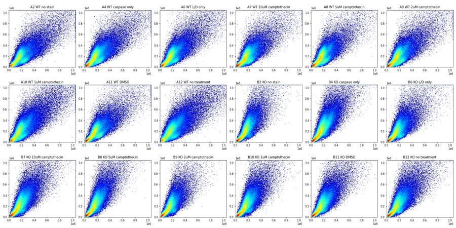
18
tool call · Read
{
"file_path": "/task/work/fsc_ssc_log.png"
}19
tool output
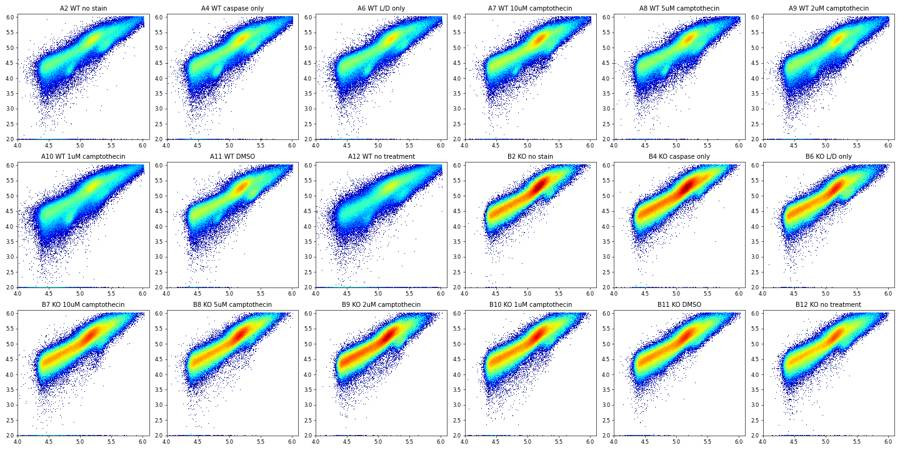
21
agent
Scatter looks like a continuum of neurons + debris with a main cluster at FSC ~160k / SSC ~200k. Now checking the fluorescence channels (caspase BL1-A, Zombie NIR RL3-A) on controls vs treated.
22
tool call · Bash
cd /task; cat > /task/work/plot2.py <<'EOF'
import sys; sys.path.insert(0,'/task/work')
from load import *
import matplotlib; matplotlib.use('Agg'); import matplotlib.pyplot as plt
from matplotlib.colors import LogNorm
d=load_all()
def asn(x,c=500): return np.arcsinh(x/c)
fig,axs=plt.subplots(3,6,figsize=(24,12))
for ax,(w,(s,df)) in zip(axs.flat,d.items()):
m=(df['FSC-A']>8e4)
ax.hist2d(asn(df['BL1-A'][m]),asn(df['RL3-A'][m]),bins=300,range=[[-3,9],[-3,9]],norm=LogNorm(),cmap='jet')
ax.set_title(w+' '+lay.set_index('well').loc[w,'sample']); ax.set_xlabel('asinh BL1 caspase'); ax.set_ylabel('asinh RL3 zombie')
plt.tight_layout(); plt.savefig('/task/work/bl1_rl3.png',dpi=60)
fig,axs=plt.subplots(3,6,figsize=(24,12))
for ax,(w,(s,df)) in zip(axs.flat,d.items()):
ax.hist2d(df['FSC-A'],asn(df['RL3-A']),bins=300,range=[[0,1.05e6],[-3,9]],norm=LogNorm(),cmap='jet')
ax.set_title(w+' '+lay.set_index('well').loc[w,'sample']); ax.set_xlabel('FSC-A'); ax.set_ylabel('asinh RL3')
plt.tight_layout(); plt.savefig('/task/work/fsc_rl3.png',dpi=60)
fig,axs=plt.subplots(3,6,figsize=(24,12))
for ax,(w,(s,df)) in zip(axs.flat,d.items()):
ax.hist2d(df['FSC-A'],asn(df['BL1-A']),bins=300,range=[[0,1.05e6],[-3,9]],norm=LogNorm(),cmap='jet')
ax.set_title(w+' '+lay.set_index('well').loc[w,'sample']); ax.set_xlabel('FSC-A'); ax.set_ylabel('asinh BL1')
plt.tight_layout(); plt.savefig('/task/work/fsc_bl1.png',dpi=60)
EOF
python3 work/plot2.py23
tool call · Read
{
"file_path": "/task/work/bl1_rl3.png"
}24
tool output
(Bash completed with no output)
25
tool output
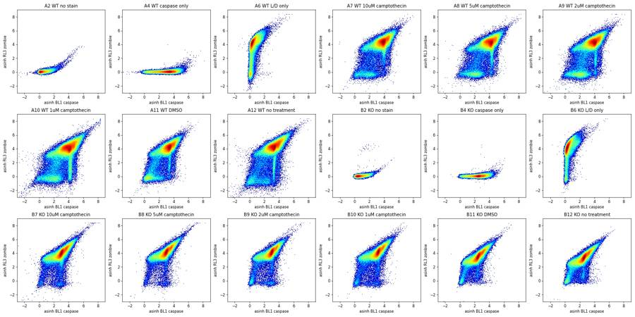
27
tool call · Read
{
"file_path": "/task/work/fsc_rl3.png"
}28
tool output
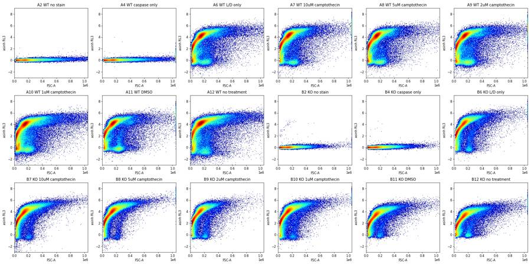
29
tool call · Read
{
"file_path": "/task/work/fsc_bl1.png"
}30
tool output
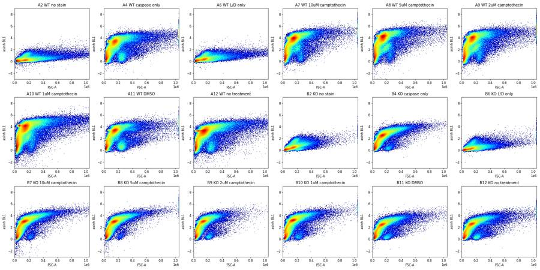
32
tool call · Bash
cd /task; cat > /task/work/plot3.py <<'EOF'
import sys; sys.path.insert(0,'/task/work')
from load import *
import matplotlib; matplotlib.use('Agg'); import matplotlib.pyplot as plt
from matplotlib.colors import LogNorm
d=load_all()
wells=['A6','A7','A11','A12','B6','B7','B11','B12']
fig,axs=plt.subplots(4,8,figsize=(32,16))
for j,w in enumerate(wells):
s,df=d[w]
live=df['RL3-A']<1000; dead=df['RL3-A']>3000
casp=df['BL1-A']>2000
for i,(m,lab) in enumerate([(live&~casp,'live casp-'),(live&casp,'live casp+'),(dead&casp,'dead casp+'),(dead&~casp,'dead casp-')]):
ax=axs[i,j]
ax.hist2d(df['FSC-A'][m],df['SSC-A'][m],bins=200,range=[[0,1.05e6],[0,1.05e6]],norm=LogNorm(),cmap='jet')
ax.set_title(f'{w} {lab} n={m.sum()}')
plt.tight_layout(); plt.savefig('/task/work/scatter_by_state.png',dpi=50)
EOF
python3 work/plot3.py33
tool call · Read
{
"file_path": "/task/work/scatter_by_state.png"
}34
tool output
(Bash completed with no output)
35
tool output
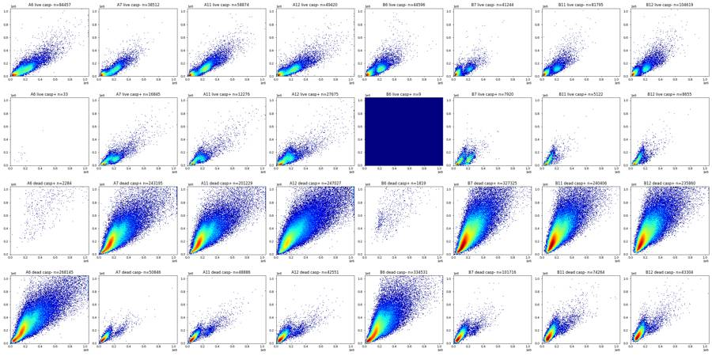
37
tool call · Bash
cd /task; cat > /task/work/plot4.py <<'EOF'
import sys; sys.path.insert(0,'/task/work')
from load import *
import matplotlib; matplotlib.use('Agg'); import matplotlib.pyplot as plt
from matplotlib.colors import LogNorm
from scipy.stats import binned_statistic_2d
d=load_all()
wells=['A2','A6','A7','A11','A12','B2','B6','B7','B11','B12']
fig,axs=plt.subplots(2,10,figsize=(40,8))
for j,w in enumerate(wells):
s,df=d[w]
x=np.log10(np.clip(df['FSC-A'],1e3,None)); y=np.log10(np.clip(df['SSC-A'],1e3,None))
ax=axs[0,j]; ax.hist2d(x,y,bins=200,range=[[4.3,6.05],[3.5,6.05]],norm=LogNorm(),cmap='jet'); ax.set_title(w)
st=binned_statistic_2d(x,y,(df['RL3-A']<1000).astype(float),'mean',bins=100,range=[[4.3,6.05],[3.5,6.05]])
cnt=binned_statistic_2d(x,y,None,'count',bins=100,range=[[4.3,6.05],[3.5,6.05]])
z=np.where(cnt.statistic>=5,st.statistic,np.nan)
ax=axs[1,j]; im=ax.imshow(z.T,origin='lower',extent=[4.3,6.05,3.5,6.05],aspect='auto',cmap='viridis',vmin=0,vmax=1); ax.set_title(w+' frac live')
plt.tight_layout(); plt.savefig('/task/work/scatter_live_frac.png',dpi=45)
EOF
python3 work/plot4.py38
tool call · Read
{
"file_path": "/task/work/scatter_live_frac.png"
}39
tool output
(Bash completed with no output)
40
tool output
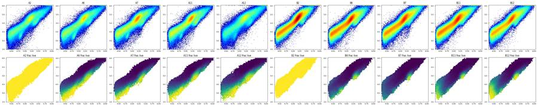
42
tool call · Bash
cd /task; cat > /task/work/plot5.py <<'EOF'
import sys; sys.path.insert(0,'/task/work')
from load import *
import matplotlib; matplotlib.use('Agg'); import matplotlib.pyplot as plt
from matplotlib.colors import LogNorm
d=load_all()
fig,axs=plt.subplots(3,6,figsize=(24,12))
for ax,(w,(s,df)) in zip(axs.flat,d.items()):
m=df['FSC-A']>5e4
ax.hist2d(df['FSC-H'][m],df['FSC-A'][m],bins=300,range=[[0,6e5],[0,1.05e6]],norm=LogNorm(),cmap='jet')
ax.plot([0,6e5],[0,6e5*1.3],'k--',lw=0.5); ax.plot([0,6e5],[0,6e5*1.8],'k--',lw=0.5)
ax.set_title(w+' '+lay.set_index('well').loc[w,'sample'])
plt.tight_layout(); plt.savefig('/task/work/singlets.png',dpi=55)
fig,axs=plt.subplots(3,6,figsize=(24,12))
for ax,(w,(s,df)) in zip(axs.flat,d.items()):
m=df['FSC-A']>5e4
ax.hist2d(df['FSC-A'][m],df['FSC-W'][m],bins=300,range=[[0,1.05e6],[0,400]],norm=LogNorm(),cmap='jet')
ax.set_title(w+' '+lay.set_index('well').loc[w,'sample'])
plt.tight_layout(); plt.savefig('/task/work/singlets_w.png',dpi=55)
EOF
python3 work/plot5.py43
tool call · Read
{
"file_path": "/task/work/singlets.png"
}44
tool call · Read
{
"file_path": "/task/work/singlets_w.png"
}45
tool output
(Bash completed with no output)
46
tool output
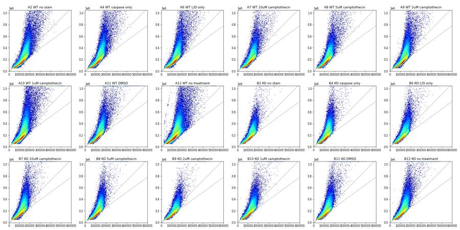
47
tool output
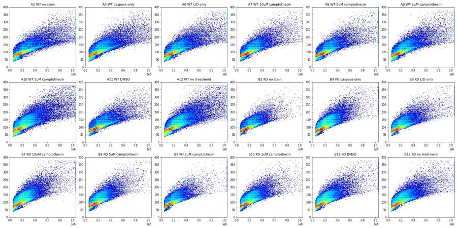
49
tool call · Bash
cd /task; cat > /task/work/plot6.py <<'EOF'
import sys; sys.path.insert(0,'/task/work')
from load import *
import matplotlib; matplotlib.use('Agg'); import matplotlib.pyplot as plt
from matplotlib.colors import LogNorm
d=load_all()
wells=['A7','A11','A12','B7','B11','B12']
fig,axs=plt.subplots(3,6,figsize=(30,15))
for j,w in enumerate(wells):
s,df=d[w]
m=df['FSC-A']>5e4
live=m&(df['RL3-A']<1000)&(df['FSC-A']>1e5); dead=m&(df['RL3-A']>3000)
for i,(mm,lab) in enumerate([(m,'all'),(live,'live'),(dead,'dead')]):
ax=axs[i,j]
ax.hist2d(df['FSC-H'][mm],df['FSC-A'][mm],bins=250,range=[[0,4e5],[0,6e5]],norm=LogNorm(),cmap='jet')
for k in [1.0,1.2,1.4,1.6]: ax.plot([0,4e5],[0,4e5*k],'k--',lw=0.5)
ax.set_title(w+' '+lab)
plt.tight_layout(); plt.savefig('/task/work/singlets_state.png',dpi=45)
for w in d:
s,df=d[w]
m=(df['FSC-A']>5e4)&(df['FSC-A']<1.04e6)
r=(df['FSC-A']/df['FSC-H'])[m]
print(w, np.percentile(r,[5,25,50,75,90,95,99]).round(2))
EOF
python3 work/plot6.py50
tool call · Read
{
"file_path": "/task/work/singlets_state.png"
}51
tool output
A2 [1.01 1.13 1.26 1.6 2.32 2.79 3.89] A4 [1.01 1.12 1.25 1.54 2.24 2.7 3.83] A6 [1.01 1.12 1.25 1.52 2.22 2.68 3.81] A7 [1.02 1.13 1.25 1.49 2.13 2.56 3.62] A8 [1.01 1.13 1.24 1.46 2.08 2.52 3.57] A9 [1.01 1.13 1.25 1.51 2.19 2.63 3.8 ] A10 [1. 1.13 1.26 1.6 2.37 2.9 4.18] A11 [1.02 1.13 1.26 1.53 2.16 2.59 3.61] A12 [1. 1.13 1.28 1.68 2.44 2.98 4.25] B2 [1.01 1.11 1.22 1.41 1.88 2.29 3.1 ] B4 [1. 1.11 1.23 1.5 2.11 2.49 3.47] B6 [1. 1.09 1.2 1.44 1.97 2.36 3.3 ] B7 [1. 1.1 1.22 1.52 2.12 2.52 3.57] B8 [1. 1.11 1.22 1.47 2.01 2.41 3.37] B9 [1. 1.09 1.19 1.4 1.86 2.23 3.04] B10 [1. 1.1 1.21 1.47 2.01 2.39 3.31] B11 [1. 1.1 1.21 1.5 2.07 2.46 3.44] B12 [1. 1.1 1.22 1.52 2.12 2.53 3.56]
52
tool output
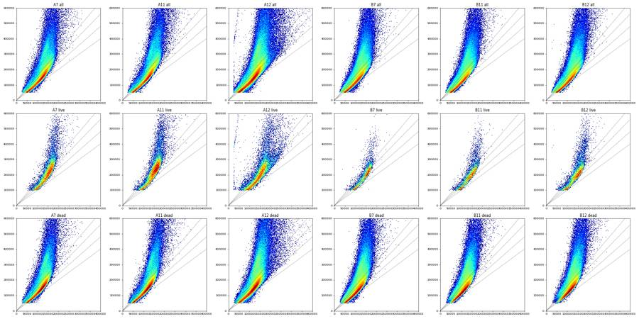
54
agent
Singlets are well separated by FSC-A/FSC-H ratio (singlets ~1.1–1.4, doublets above). Next: picking the live (Zombie NIR) and caspase (BL1) thresholds from the unstained / single-stain controls.
55
tool call · Bash
cd /task; cat > /task/work/hist1.py <<'EOF'
import sys; sys.path.insert(0,'/task/work')
from load import *
import matplotlib; matplotlib.use('Agg'); import matplotlib.pyplot as plt
d=load_all()
def asn(x,c=500): return np.arcsinh(x/c)
def prelim(df):
m=(df['FSC-A']>7e4)&(df['FSC-A']<1.0e6)&(df['SSC-A']>5e3)&(df['SSC-A']<1.0e6)
r=df['FSC-A']/df['FSC-H']
return m&(r<1.6)
fig,axs=plt.subplots(2,2,figsize=(18,10))
bins=np.linspace(-3,9,241)
for w,(s,df) in d.items():
m=prelim(df)
ls='-' if w.startswith('A') else '--'
ax=axs[0,0] if w.startswith('A') else axs[0,1]
ax.plot(bins[:-1],np.histogram(asn(df['RL3-A'][m]),bins)[0]/m.sum(),ls,label=w+' '+lay.set_index('well').loc[w,'treatment'])
live=m&(df['RL3-A']<1500)
ax=axs[1,0] if w.startswith('A') else axs[1,1]
ax.plot(bins[:-1],np.histogram(asn(df['BL1-A'][live]),bins)[0]/live.sum(),ls,label=w)
for ax in axs.flat: ax.legend(fontsize=7); ax.set_yscale('log')
axs[0,0].set_title('RL3 (Zombie) WT, singlets'); axs[0,1].set_title('RL3 KO'); axs[1,0].set_title('BL1 caspase in RL3<1500, WT'); axs[1,1].set_title('BL1 KO')
for ax in axs[0]:
for t in [1000,1500,2000]: ax.axvline(asn(t),color='k',lw=0.5)
for ax in axs[1]:
for t in [1000,1500,2000]: ax.axvline(asn(t),color='k',lw=0.5)
plt.tight_layout(); plt.savefig('/task/work/hist1.png',dpi=60)
for w,(s,df) in d.items():
m=prelim(df)
print(w, m.sum(), 'RL3 pct', np.percentile(df['RL3-A'][m],[50,99,99.5,99.9]).round(0), 'BL1 pct', np.percentile(df['BL1-A'][m],[50,99,99.5,99.9]).round(0))
EOF
python3 work/hist1.py56
tool call · Read
{
"file_path": "/task/work/hist1.png"
}57
tool output
A2 176289 RL3 pct [ 19. 148. 162. 195.] BL1 pct [ 121. 1033. 1205. 1652.] A4 218254 RL3 pct [ 19. 149. 164. 196.] BL1 pct [ 5705. 17913. 19642. 26149.] A6 208204 RL3 pct [14015. 39083. 44370. 56675.] BL1 pct [ 184. 1055. 1207. 1606.] A7 211084 RL3 pct [15958. 45098. 51034. 65608.] BL1 pct [10269. 29219. 31848. 39195.] A8 210380 RL3 pct [14444. 40710. 45506. 58486.] BL1 pct [12870. 38900. 42448. 51805.] A9 219726 RL3 pct [14318. 41162. 46329. 58375.] BL1 pct [10107. 32140. 34981. 43614.] A10 264455 RL3 pct [11212. 32915. 36997. 47333.] BL1 pct [10576. 34110. 38127. 47714.] A11 195193 RL3 pct [13467. 37668. 42609. 53690.] BL1 pct [ 6199. 17231. 18799. 24747.] A12 210318 RL3 pct [14184. 40516. 46143. 59226.] BL1 pct [ 5665. 17592. 20399. 27843.] B2 213711 RL3 pct [ 21. 159. 177. 226.] BL1 pct [ 249. 1633. 1874. 2416.] B4 307440 RL3 pct [ 21. 155. 173. 211.] BL1 pct [ 2863. 7727. 8561. 10916.] B6 215859 RL3 pct [13925. 46088. 51632. 64916.] BL1 pct [ 147. 1249. 1499. 2055.] B7 287117 RL3 pct [10770. 34867. 39149. 49554.] BL1 pct [ 4669. 12325. 13750. 17630.] B8 246570 RL3 pct [12922. 39967. 44724. 57405.] BL1 pct [ 4499. 11796. 13126. 16834.] B9 204235 RL3 pct [12091. 39203. 43902. 56108.] BL1 pct [ 4563. 12277. 13699. 17938.] B10 258781 RL3 pct [12575. 40165. 44862. 56273.] BL1 pct [ 5574. 14417. 16031. 20800.] B11 258445 RL3 pct [ 6741. 22117. 24941. 32051.] BL1 pct [ 2687. 7338. 8181. 10869.] B12 251291 RL3 pct [ 5671. 18354. 20655. 26377.] BL1 pct [ 2937. 8041. 8991. 11922.]
58
tool output
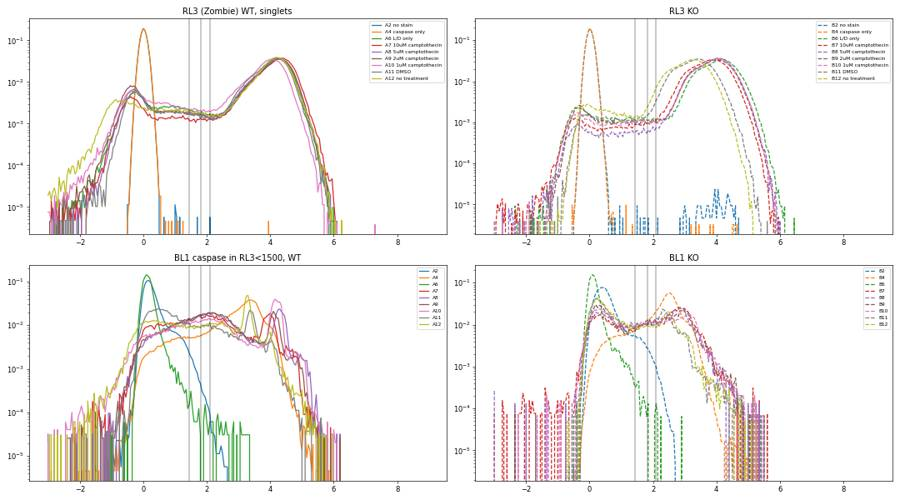
60
tool call · Bash
cd /task; cat > /task/work/plot7.py <<'EOF'
import sys; sys.path.insert(0,'/task/work')
from load import *
import matplotlib; matplotlib.use('Agg'); import matplotlib.pyplot as plt
from matplotlib.colors import LogNorm
d=load_all()
def asn(x,c=500): return np.arcsinh(x/c)
def prelim(df):
m=(df['FSC-A']>7e4)&(df['FSC-A']<1.0e6)&(df['SSC-A']>5e3)&(df['SSC-A']<1.0e6)
r=df['FSC-A']/df['FSC-H']
return m&(r<1.6)
fig,axs=plt.subplots(3,6,figsize=(30,15))
for ax,(w,(s,df)) in zip(axs.flat,d.items()):
m=prelim(df)
ax.hist2d(asn(df['BL1-A'][m]),asn(df['RL3-A'][m]),bins=250,range=[[-2,7],[-2,7]],norm=LogNorm(),cmap='jet')
ax.axhline(asn(1000),color='k',lw=0.7); ax.axvline(asn(1500),color='k',lw=0.7)
ax.set_title(w+' '+lay.set_index('well').loc[w,'sample']+f' n={m.sum()}')
plt.tight_layout(); plt.savefig('/task/work/bl1_rl3_gated.png',dpi=45)
fig,axs=plt.subplots(3,6,figsize=(30,15))
for ax,(w,(s,df)) in zip(axs.flat,d.items()):
m=prelim(df)&(df['RL3-A']<1000)
ax.hist2d(df['FSC-A'][m],asn(df['BL1-A'][m]),bins=200,range=[[0,6e5],[-2,7]],norm=LogNorm(),cmap='jet')
ax.axhline(asn(1500),color='k',lw=0.7)
ax.set_title(w+' live '+lay.set_index('well').loc[w,'sample']+f' n={m.sum()}')
plt.tight_layout(); plt.savefig('/task/work/fsc_bl1_live.png',dpi=45)
EOF
python3 work/plot7.py61
tool call · Read
{
"file_path": "/task/work/bl1_rl3_gated.png"
}62
tool call · Read
{
"file_path": "/task/work/fsc_bl1_live.png"
}63
tool output
(Bash completed with no output)
64
tool output
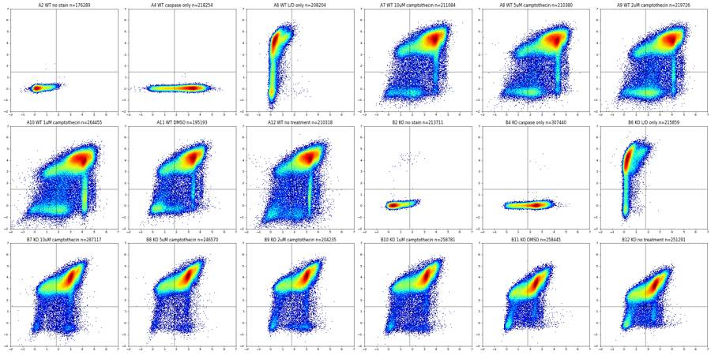
65
tool output
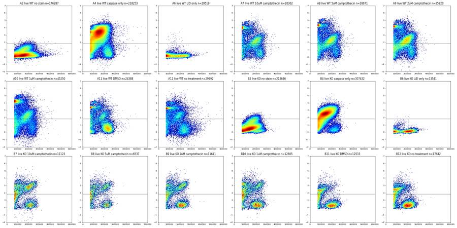
67
tool call · Bash
cd /task; cat > /task/work/stripe.py <<'EOF'
import sys; sys.path.insert(0,'/task/work')
from load import *
import matplotlib; matplotlib.use('Agg'); import matplotlib.pyplot as plt
from matplotlib.colors import LogNorm
d=load_all()
def asn(x,c=500): return np.arcsinh(x/c)
pd.set_option('display.width',250)
for w in ['A7','A11','B7','B12']:
s,df=d[w]
b=asn(df['BL1-A']); r=asn(df['RL3-A'])
pk={'A7':4.3,'A11':3.35,'B7':3.0,'B12':2.5}[w]
stripe=(abs(b-pk)<0.12)&(r<1.0)&(df['FSC-A']>5e4)
other=(r<1.0)&(df['FSC-A']>1.5e5)&(b<1)
print(w,'stripe n',stripe.sum())
print(df[stripe].describe().round(0).to_string())
print(df[other].describe().round(0).loc[['mean','50%']].to_string())
EOF
python3 work/stripe.py68
tool output
A7 stripe n 340
Time FSC-A SSC-A BL1-A RL3-A FSC-H SSC-H FSC-W SSC-W
count 340.0 340.0 340.0 340.0 340.0 340.0 340.0 340.0 340.0
mean 18.0 143887.0 97268.0 17690.0 120.0 102822.0 72286.0 90.0 82.0
std 14.0 97729.0 86134.0 1232.0 441.0 38676.0 52375.0 24.0 28.0
min 0.0 52677.0 -65536.0 16339.0 -4635.0 44084.0 9077.0 44.0 27.0
25% 5.0 74146.0 25216.0 16690.0 -59.0 67078.0 22252.0 78.0 64.0
50% 14.0 122709.0 94542.0 17178.0 130.0 98196.0 72804.0 85.0 83.0
75% 29.0 170292.0 134468.0 18562.0 381.0 130939.0 108246.0 95.0 90.0
max 47.0 678363.0 693174.0 20757.0 586.0 280106.0 378789.0 254.0 248.0
Time FSC-A SSC-A BL1-A RL3-A FSC-H SSC-H FSC-W SSC-W
mean 23.0 252121.0 137261.0 246.0 -147.0 159774.0 102316.0 102.0 95.0
50% 24.0 246931.0 126413.0 265.0 -142.0 161874.0 97056.0 101.0 94.0
A11 stripe n 3008
Time FSC-A SSC-A BL1-A RL3-A FSC-H SSC-H FSC-W SSC-W
count 3008.0 3008.0 3008.0 3008.0 3008.0 3008.0 3008.0 3008.0 3008.0
mean 26.0 90263.0 45571.0 7252.0 258.0 75187.0 36583.0 78.0 64.0
std 13.0 61894.0 61703.0 447.0 211.0 29155.0 42128.0 16.0 21.0
min 0.0 50085.0 -2119.0 6313.0 -726.0 31108.0 5169.0 45.0 24.0
25% 16.0 62602.0 15806.0 6899.0 126.0 60030.0 15296.0 71.0 48.0
50% 27.0 68280.0 20594.0 7268.0 299.0 64540.0 18698.0 77.0 59.0
75% 36.0 82911.0 38582.0 7618.0 418.0 72879.0 31119.0 82.0 77.0
max 47.0 694056.0 752551.0 8026.0 587.0 272092.0 374926.0 270.0 271.0
Time FSC-A SSC-A BL1-A RL3-A FSC-H SSC-H FSC-W SSC-W
mean 24.0 256219.0 138163.0 278.0 -54.0 160572.0 101673.0 103.0 96.0
50% 24.0 245935.0 124724.0 277.0 -80.0 161693.0 95734.0 102.0 94.0
B7 stripe n 1457
Time FSC-A SSC-A BL1-A RL3-A FSC-H SSC-H FSC-W SSC-W
count 1457.0 1457.0 1457.0 1457.0 1457.0 1457.0 1457.0 1457.0 1457.0
mean 22.0 146131.0 80504.0 4993.0 -2.0 110872.0 69200.0 85.0 74.0
std 13.0 79877.0 67588.0 347.0 943.0 48864.0 55217.0 15.0 21.0
min 0.0 50037.0 -51399.0 4441.0 -29335.0 34331.0 6073.0 44.0 12.0
25% 11.0 64903.0 22254.0 4686.0 -205.0 60079.0 19980.0 75.0 55.0
50% 22.0 135622.0 68298.0 4975.0 55.0 112194.0 60845.0 86.0 80.0
75% 33.0 218025.0 116550.0 5276.0 292.0 159624.0 99477.0 95.0 89.0
max 47.0 617562.0 398516.0 5650.0 587.0 251800.0 368890.0 225.0 162.0
Time FSC-A SSC-A BL1-A RL3-A FSC-H SSC-H FSC-W SSC-W
mean 23.0 230088.0 129310.0 11.0 -504.0 156430.0 100944.0 98.0 91.0
50% 23.0 220078.0 115556.0 165.0 -38.0 158204.0 92336.0 96.0 90.0
B12 stripe n 2319
Time FSC-A SSC-A BL1-A RL3-A FSC-H SSC-H FSC-W SSC-W
count 2319.0 2319.0 2319.0 2319.0 2319.0 2319.0 2319.0 2319.0 2319.0
mean 21.0 94567.0 65435.0 2976.0 215.0 76894.0 53529.0 80.0 72.0
std 13.0 56182.0 62931.0 196.0 189.0 31423.0 46371.0 15.0 20.0
min 0.0 50003.0 -50577.0 2679.0 -677.0 28373.0 1459.0 48.0 4.0
25% 9.0 58674.0 20452.0 2814.0 75.0 53554.0 18432.0 72.0 56.0
50% 19.0 77499.0 43394.0 2947.0 198.0 65543.0 33631.0 78.0 75.0
75% 31.0 110126.0 91874.0 3122.0 362.0 94772.0 76980.0 85.0 82.0
max 47.0 834487.0 673421.0 3415.0 587.0 216899.0 327270.0 204.0 204.0
Time FSC-A SSC-A BL1-A RL3-A FSC-H SSC-H FSC-W SSC-W
mean 23.0 232167.0 150093.0 199.0 86.0 153409.0 110006.0 100.0 95.0
50% 23.0 214946.0 127084.0 176.0 47.0 153640.0 99394.0 97.0 92.070
tool call · Bash
cd /task; cat > /task/work/plot8.py <<'EOF'
import sys; sys.path.insert(0,'/task/work')
from load import *
import matplotlib; matplotlib.use('Agg'); import matplotlib.pyplot as plt
from matplotlib.colors import LogNorm
d=load_all()
wells=['A2','A6','A7','A11','A12','B6','B7','B11','B12']
fig,axs=plt.subplots(3,9,figsize=(40,14))
for j,w in enumerate(wells):
s,df=d[w]
live=df['RL3-A']<1000;
for i,(m,lab) in enumerate([(np.ones(len(df),bool),'all'),(live,'Zombie-'),(~live,'Zombie+')]):
ax=axs[i,j]
ax.hist2d(df['FSC-A'][m],df['SSC-A'][m],bins=200,range=[[0,7e5],[0,7e5]],norm=LogNorm(),cmap='jet')
ax.grid(alpha=0.3); ax.set_title(f'{w} {lab}')
plt.tight_layout(); plt.savefig('/task/work/scatter_zoom.png',dpi=40)
EOF
python3 work/plot8.py71
tool call · Read
{
"file_path": "/task/work/scatter_zoom.png"
}72
tool output
(Bash completed with no output)
73
tool output
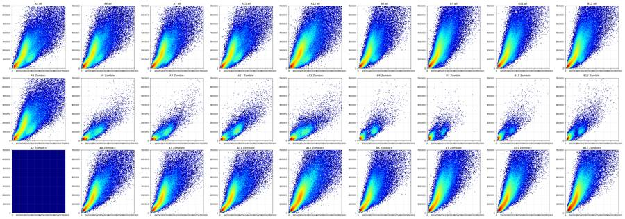
75
agent
Live cells form a distinct cluster (FSC ~150–300k, low SSC); debris sits below FSC ~80k. Now checking acquisition stability over time (clogs / bubbles) before fixing the gates.
76
tool call · Bash
cd /task; cat > /task/work/timeqc.py <<'EOF'
import sys; sys.path.insert(0,'/task/work')
from load import *
import matplotlib; matplotlib.use('Agg'); import matplotlib.pyplot as plt
d=load_all()
fig,axs=plt.subplots(3,6,figsize=(30,12))
for ax,(w,(s,df)) in zip(axs.flat,d.items()):
t=df['Time'].values
bins=np.arange(0,48,0.5)
h=np.histogram(t,bins)[0]
ax.plot(bins[:-1],h/0.5,'k-')
ax2=ax.twinx()
# median FSC & RL3 by bin
idx=np.digitize(t,bins)-1
medf=[np.median(df['FSC-A'].values[idx==i]) if (idx==i).sum()>10 else np.nan for i in range(len(bins)-1)]
fracl=[np.mean(df['RL3-A'].values[idx==i]<1000) if (idx==i).sum()>10 else np.nan for i in range(len(bins)-1)]
ax2.plot(bins[:-1],np.array(medf)/1e5,'b-'); ax2.plot(bins[:-1],fracl,'r-'); ax2.set_ylim(0,2)
ax.set_title(f'{w} rate(k/s) black; medFSC/1e5 blue; frac RL3<1000 red'); ax.set_ylim(0,None)
cv=np.std(h[2:-2])/np.mean(h[2:-2])
print(w, 'events',len(t),'rate mean',round(np.mean(h[2:-2])/0.5),'cv',round(cv,3),'min/max bin', h[2:-2].min(), h[2:-2].max(), 'first/last t', t.min().round(2), t.max().round(2))
plt.tight_layout(); plt.savefig('/task/work/timeqc.png',dpi=40)
EOF
python3 work/timeqc.py77
tool call · Read
{
"file_path": "/task/work/timeqc.png"
}78
tool output
A2 events 365736 rate mean 7779 cv 0.087 min/max bin 2589 4591 first/last t 0.01 47.02 A4 events 440820 rate mean 9396 cv 0.05 min/max bin 4020 5404 first/last t 0.01 47.09 A6 events 412724 rate mean 8878 cv 0.115 min/max bin 545 5112 first/last t 0.01 46.08 A7 events 395514 rate mean 8427 cv 0.062 min/max bin 3468 4734 first/last t 0.01 47.05 A8 events 384992 rate mean 8212 cv 0.127 min/max bin 3044 7475 first/last t 0.01 46.89 A9 events 428254 rate mean 9046 cv 0.069 min/max bin 3685 5229 first/last t 0.01 47.2 A10 events 552590 rate mean 11685 cv 0.098 min/max bin 4524 6943 first/last t 0.01 47.17 A11 events 377220 rate mean 8029 cv 0.049 min/max bin 3375 4316 first/last t 0.01 47.08 A12 events 409074 rate mean 8853 cv 0.935 min/max bin 0 12210 first/last t 0.11 46.93 B2 events 392795 rate mean 8390 cv 0.04 min/max bin 3677 4463 first/last t 0.01 47.08 B4 events 605670 rate mean 12889 cv 0.055 min/max bin 5450 6973 first/last t 0.01 47.09 B6 events 457465 rate mean 9769 cv 0.048 min/max bin 4093 5293 first/last t 0.01 47.04 B7 events 612174 rate mean 13043 cv 0.059 min/max bin 5180 7166 first/last t 0.01 47.1 B8 events 493435 rate mean 10598 cv 0.146 min/max bin 929 9982 first/last t 0.01 46.1 B9 events 425772 rate mean 9070 cv 0.072 min/max bin 3592 5036 first/last t 0.01 47.03 B10 events 539106 rate mean 11476 cv 0.056 min/max bin 4723 6299 first/last t 0.01 47.06 B11 events 561171 rate mean 12054 cv 0.103 min/max bin 1149 6750 first/last t 0.01 46.1 B12 events 538223 rate mean 11415 cv 0.069 min/max bin 4501 6525 first/last t 0.01 47.2
79
tool output
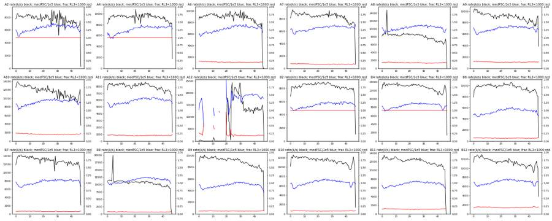
81
agent
A12 (WT no treatment) looks abnormal: almost no events for the first ~20 s, then a burst and a shifted FSC. Investigating that well in detail.
82
tool call · Bash
cd /task; cat > /task/work/a12.py <<'EOF'
import sys; sys.path.insert(0,'/task/work')
from load import *
import matplotlib; matplotlib.use('Agg'); import matplotlib.pyplot as plt
from matplotlib.colors import LogNorm
d=load_all()
def asn(x,c=500): return np.arcsinh(x/c)
s,df=d['A12']
t=df['Time'].values
bins=np.arange(0,48,0.25)
h=np.histogram(t,bins)[0]
for b,c in zip(bins[:-1],h):
if b<26 or b%5==0: print(b,c,end='; ')
print()
fig,axs=plt.subplots(2,4,figsize=(24,10))
axs[0,0].hist2d(t,np.log10(np.clip(df['FSC-A'],1e3,None)),bins=[200,200],norm=LogNorm(),cmap='jet'); axs[0,0].set_title('A12 time vs log FSC')
axs[0,1].hist2d(t,np.log10(np.clip(df['SSC-A'],1e3,None)),bins=[200,200],norm=LogNorm(),cmap='jet'); axs[0,1].set_title('time vs log SSC')
axs[0,2].hist2d(t,asn(df['RL3-A']),bins=[200,200],norm=LogNorm(),cmap='jet'); axs[0,2].set_title('time vs RL3')
axs[0,3].hist2d(t,asn(df['BL1-A']),bins=[200,200],norm=LogNorm(),cmap='jet'); axs[0,3].set_title('time vs BL1')
for k,(lo,hi) in enumerate([(0,20),(20,24),(24,47)]):
m=(t>=lo)&(t<hi)
axs[1,k].hist2d(np.log10(np.clip(df['FSC-A'][m],1e3,None)),np.log10(np.clip(df['SSC-A'][m],1e3,None)),bins=200,range=[[4.3,6.05],[3.5,6.05]],norm=LogNorm(),cmap='jet'); axs[1,k].set_title(f't {lo}-{hi} n={m.sum()}')
s2,df2=d['A11']
axs[1,3].hist2d(df2['Time'],np.log10(np.clip(df2['FSC-A'],1e3,None)),bins=[200,200],norm=LogNorm(),cmap='jet'); axs[1,3].set_title('A11 time vs log FSC')
plt.tight_layout(); plt.savefig('/task/work/a12.png',dpi=45)
EOF
python3 work/a12.py83
tool call · Read
{
"file_path": "/task/work/a12.png"
}84
tool output
0.0 53; 0.25 109; 0.5 111; 0.75 99; 1.0 101; 1.25 110; 1.5 136; 1.75 100; 2.0 85; 2.25 57; 2.5 43; 2.75 32; 3.0 26; 3.25 8; 3.5 12; 3.75 2; 4.0 0; 4.25 0; 4.5 1; 4.75 0; 5.0 0; 5.25 0; 5.5 0; 5.75 0; 6.0 0; 6.25 47; 6.5 0; 6.75 0; 7.0 0; 7.25 0; 7.5 54; 7.75 0; 8.0 0; 8.25 0; 8.5 0; 8.75 0; 9.0 50; 9.25 0; 9.5 0; 9.75 0; 10.0 0; 10.25 0; 10.5 0; 10.75 757; 11.0 467; 11.25 28; 11.5 0; 11.75 5; 12.0 1; 12.25 1; 12.5 1; 12.75 0; 13.0 0; 13.25 71; 13.5 0; 13.75 0; 14.0 0; 14.25 0; 14.5 0; 14.75 37; 15.0 28; 15.25 0; 15.5 0; 15.75 0; 16.0 0; 16.25 0; 16.5 55; 16.75 0; 17.0 0; 17.25 0; 17.5 0; 17.75 0; 18.0 63; 18.25 0; 18.5 0; 18.75 0; 19.0 0; 19.25 0; 19.5 49; 19.75 25; 20.0 928; 20.25 3706; 20.5 4125; 20.75 4901; 21.0 5646; 21.25 3006; 21.5 1989; 21.75 2122; 22.0 2047; 22.25 1911; 22.5 1458; 22.75 52; 23.0 39; 23.25 163; 23.5 5125; 23.75 5773; 24.0 7045; 24.25 5165; 24.5 3829; 24.75 4566; 25.0 4429; 25.25 4531; 25.5 5213; 25.75 5473; 30.0 6073; 35.0 2697; 40.0 3756; 45.0 2747;
85
tool output
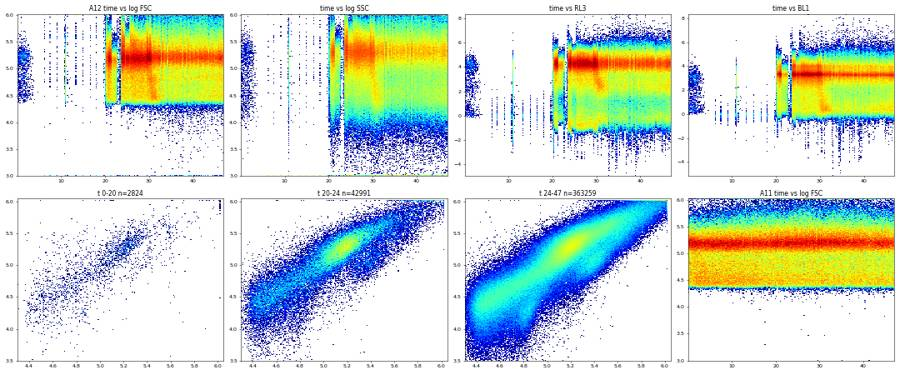
87
tool call · Bash
cd /task; cat > /task/work/timeqc2.py <<'EOF'
import sys; sys.path.insert(0,'/task/work')
from load import *
import matplotlib; matplotlib.use('Agg'); import matplotlib.pyplot as plt
from matplotlib.colors import LogNorm
d=load_all()
def asn(x,c=500): return np.arcsinh(x/c)
for ch,fn,tr,rng in [('FSC-A','time_fsc',lambda x: np.log10(np.clip(x,1e3,None)),(3,6.05)),('RL3-A','time_rl3',asn,(-5,8))]:
fig,axs=plt.subplots(3,6,figsize=(30,12))
for ax,(w,(s,df)) in zip(axs.flat,d.items()):
ax.hist2d(df['Time'],tr(df[ch]),bins=[190,200],range=[[0,47.5],rng],norm=LogNorm(),cmap='jet')
ax.set_title(w+' '+lay.set_index('well').loc[w,'sample'])
plt.tight_layout(); plt.savefig(f'/task/work/{fn}.png',dpi=40)
for w,(s,df) in d.items():
print(w,'FSC-A<22k frac %.4f'%np.mean(df['FSC-A']<22000),'RL3<-2000 frac %.4f'%np.mean(df['RL3-A']<-2000),'BL1<-2000 %.4f'%np.mean(df['BL1-A']<-2000), 'SSC<0 %.4f'%np.mean(df['SSC-A']<0))
EOF
python3 work/timeqc2.py88
tool call · Read
{
"file_path": "/task/work/time_fsc.png"
}89
tool call · Read
{
"file_path": "/task/work/time_rl3.png"
}90
tool output
A2 FSC-A<22k frac 0.0053 RL3<-2000 frac 0.0000 BL1<-2000 0.0000 SSC<0 0.0033 A4 FSC-A<22k frac 0.0041 RL3<-2000 frac 0.0000 BL1<-2000 0.0001 SSC<0 0.0017 A6 FSC-A<22k frac 0.0044 RL3<-2000 frac 0.0002 BL1<-2000 0.0000 SSC<0 0.0018 A7 FSC-A<22k frac 0.0026 RL3<-2000 frac 0.0002 BL1<-2000 0.0001 SSC<0 0.0009 A8 FSC-A<22k frac 0.0028 RL3<-2000 frac 0.0002 BL1<-2000 0.0001 SSC<0 0.0011 A9 FSC-A<22k frac 0.0039 RL3<-2000 frac 0.0003 BL1<-2000 0.0001 SSC<0 0.0017 A10 FSC-A<22k frac 0.0074 RL3<-2000 frac 0.0007 BL1<-2000 0.0004 SSC<0 0.0045 A11 FSC-A<22k frac 0.0026 RL3<-2000 frac 0.0000 BL1<-2000 0.0000 SSC<0 0.0009 A12 FSC-A<22k frac 0.0078 RL3<-2000 frac 0.0015 BL1<-2000 0.0005 SSC<0 0.0061 B2 FSC-A<22k frac 0.0012 RL3<-2000 frac 0.0000 BL1<-2000 0.0000 SSC<0 0.0001 B4 FSC-A<22k frac 0.0025 RL3<-2000 frac 0.0000 BL1<-2000 0.0000 SSC<0 0.0004 B6 FSC-A<22k frac 0.0028 RL3<-2000 frac 0.0000 BL1<-2000 0.0000 SSC<0 0.0003 B7 FSC-A<22k frac 0.0040 RL3<-2000 frac 0.0008 BL1<-2000 0.0005 SSC<0 0.0017 B8 FSC-A<22k frac 0.0029 RL3<-2000 frac 0.0002 BL1<-2000 0.0001 SSC<0 0.0007 B9 FSC-A<22k frac 0.0019 RL3<-2000 frac 0.0000 BL1<-2000 0.0000 SSC<0 0.0003 B10 FSC-A<22k frac 0.0026 RL3<-2000 frac 0.0001 BL1<-2000 0.0000 SSC<0 0.0005 B11 FSC-A<22k frac 0.0033 RL3<-2000 frac 0.0000 BL1<-2000 0.0000 SSC<0 0.0003 B12 FSC-A<22k frac 0.0033 RL3<-2000 frac 0.0000 BL1<-2000 0.0000 SSC<0 0.0005
91
tool output
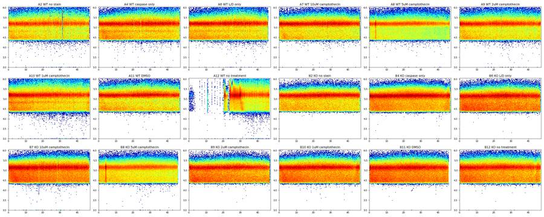
92
tool output
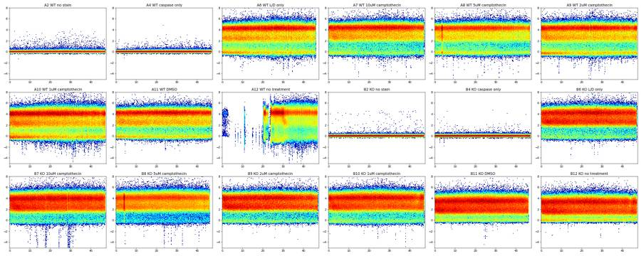
94
thinking
Only well A12 shows a clog or bubble pattern, with a ~20 s gap followed by a burst and drifting signals; the other wells are stable. Next I'm setting the debris cut on FSC.
95
tool call · Bash
cd /task; cat > /task/work/hist2.py <<'EOF'
import sys; sys.path.insert(0,'/task/work')
from load import *
import matplotlib; matplotlib.use('Agg'); import matplotlib.pyplot as plt
d=load_all()
fig,axs=plt.subplots(1,3,figsize=(24,6))
bins=np.linspace(4.3,6.05,176)
for w,(s,df) in d.items():
if w in ['A2','A4','B2','B4']: continue
r=df['FSC-A']/df['FSC-H']
m=(r<1.6)&(df['SSC-A']>0)
lv=m&(df['RL3-A']<1000); dd=m&(df['RL3-A']>=1000)
ls='-' if w.startswith('A') else '--'
axs[0].plot(bins[:-1],np.histogram(np.log10(np.clip(df['FSC-A'][lv],1,None)),bins)[0],ls,label=w)
axs[1].plot(bins[:-1],np.histogram(np.log10(np.clip(df['FSC-A'][dd],1,None)),bins)[0],ls,label=w)
axs[2].plot(bins[:-1],np.histogram(np.log10(np.clip(df['SSC-A'][lv&(df['FSC-A']>8e4)],1,None)),np.linspace(3,6.05,176))[0],ls,label=w)
for ax in axs: ax.legend(fontsize=7); ax.grid(alpha=.3)
for x in [np.log10(8e4),np.log10(1e5)]:
axs[0].axvline(x,color='k'); axs[1].axvline(x,color='k')
axs[0].set_title('log FSC-A, Zombie- (RL3<1000) ratio<1.6'); axs[1].set_title('log FSC-A Zombie+'); axs[2].set_title('log SSC-A Zombie-, FSC>80k')
plt.tight_layout(); plt.savefig('/task/work/hist2.png',dpi=55)
EOF
python3 work/hist2.py96
tool call · Read
{
"file_path": "/task/work/hist2.png"
}97
tool output
(Bash completed with no output)
98
tool output
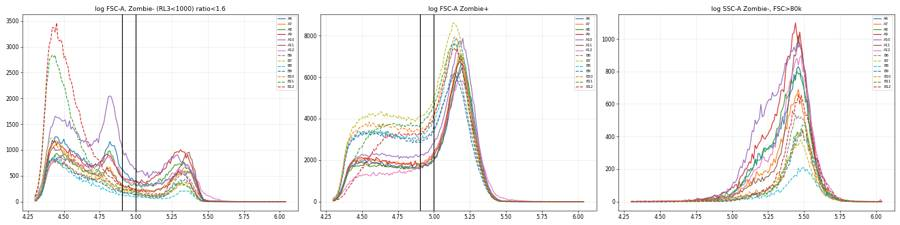
100
tool call · Bash
cd /task; cat > /task/work/hist3.py <<'EOF'
import sys; sys.path.insert(0,'/task/work')
from load import *
import matplotlib; matplotlib.use('Agg'); import matplotlib.pyplot as plt
d=load_all()
fig,axs=plt.subplots(1,3,figsize=(24,6))
bins=np.linspace(0.8,3,221)
for w,(s,df) in d.items():
r=df['FSC-A']/df['FSC-H']
c=(df['FSC-A']>1e5)&(df['FSC-A']<1e6)&(df['SSC-A']>5e3)&(df['SSC-A']<1e6)
ls='-' if w.startswith('A') else '--'
axs[0].plot(bins[:-1],np.histogram(r[c],bins)[0]/c.sum(),ls,label=w)
if w not in ['A2','A4','B2','B4']:
lv=c&(df['RL3-A']<1000)
axs[1].plot(bins[:-1],np.histogram(r[lv],bins)[0]/lv.sum(),ls,label=w)
axs[2].plot(bins[:-1],np.histogram(df['FSC-W'][lv],np.linspace(0,300,221))[0]/lv.sum(),ls,label=w)
for ax in axs: ax.legend(fontsize=7); ax.grid(alpha=.3)
axs[0].set_title('FSC-A/FSC-H, cells'); axs[1].set_title('ratio, Zombie- cells'); axs[2].set_title('FSC-W Zombie- cells')
plt.tight_layout(); plt.savefig('/task/work/hist3.png',dpi=55)
EOF
python3 work/hist3.py101
tool call · Read
{
"file_path": "/task/work/hist3.png"
}102
tool output
(Bash completed with no output)
103
tool output
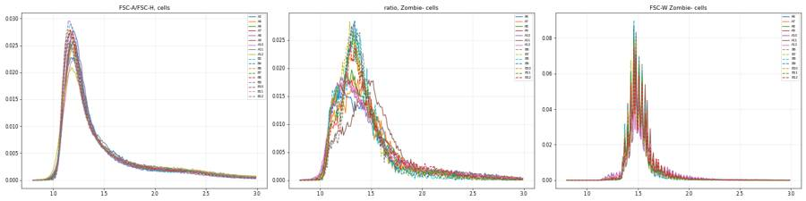
105
tool call · Bash
cd /task; cat > /task/work/prelim2.py <<'EOF'
import sys; sys.path.insert(0,'/task/work')
from load import *
import matplotlib; matplotlib.use('Agg'); import matplotlib.pyplot as plt
from matplotlib.path import Path
d=load_all()
def asn(x,c=500): return np.arcsinh(x/c)
CELLS=[(1.0e5,5e3),(4.5e5,5e3),(1.0e6,2.5e5),(1.0e6,1.0e6),(1.0e5,1.0e6)]
SING=[(9e4,9e4/1.7),(1.05e6,1.05e6/1.7),(1.05e6,1.05e6),(9e4,9e4/0.8)]
def gate(df):
c=Path(CELLS).contains_points(df[['FSC-A','SSC-A']].values)
s=c&Path(SING).contains_points(df[['FSC-A','FSC-H']].values)
return c,s
import pickle
G={}
for w,(s,df) in d.items():
c,sg=gate(df); G[w]=(c,sg)
pickle.dump(G,open('/task/work/G.pkl','wb'))
fig,axs=plt.subplots(2,2,figsize=(18,10))
bins=np.linspace(-3,8,221)
for w,(s,df) in d.items():
c,sg=G[w]
ls='-' if w.startswith('A') else '--'
ax=axs[0,0] if w.startswith('A') else axs[0,1]
ax.plot(bins[:-1],np.histogram(asn(df['RL3-A'][sg]),bins)[0]/sg.sum(),ls,label=w+' '+lay.set_index('well').loc[w,'treatment'])
live=sg&(df['RL3-A']<1000)
ax=axs[1,0] if w.startswith('A') else axs[1,1]
ax.plot(bins[:-1],np.histogram(asn(df['BL1-A'][live]),bins)[0]/live.sum(),ls,label=w)
print(w,'cells',c.sum(),'singlets',sg.sum(),'live<1000',live.sum(), 'live frac %.3f'%(live.sum()/sg.sum()),'BL1>1500 of live %.3f'%np.mean(df['BL1-A'][live]>1500), 'BL1 99.5 pct live %.0f'%np.percentile(df['BL1-A'][live],99.5), 'RL3 99.9 %.0f'%np.percentile(df['RL3-A'][sg],99.9))
for ax in axs.flat: ax.legend(fontsize=7); ax.set_yscale('log'); ax.grid(alpha=.3)
for ax in axs[0]:
for t in [700,1000,1500,2000]: ax.axvline(asn(t),color='k',lw=0.5)
for ax in axs[1]:
for t in [1000,1500,2000,3000]: ax.axvline(asn(t),color='k',lw=0.5)
plt.tight_layout(); plt.savefig('/task/work/hist4.png',dpi=60)
EOF
python3 work/prelim2.py106
tool call · Read
{
"file_path": "/task/work/hist4.png"
}107
tool output
A2 cells 210549 singlets 154256 live<1000 154255 live frac 1.000 BL1>1500 of live 0.002 BL1 99.5 pct live 1285 RL3 99.9 202 A4 cells 251603 singlets 188474 live<1000 188473 live frac 1.000 BL1>1500 of live 0.882 BL1 99.5 pct live 20808 RL3 99.9 202 A6 cells 236144 singlets 180508 live<1000 21600 live frac 0.120 BL1>1500 of live 0.002 BL1 99.5 pct live 714 RL3 99.9 62143 A7 cells 237088 singlets 185245 live<1000 17470 live frac 0.094 BL1>1500 of live 0.518 BL1 99.5 pct live 31626 RL3 99.9 72002 A8 cells 230443 singlets 183618 live<1000 23154 live frac 0.126 BL1>1500 of live 0.612 BL1 99.5 pct live 41989 RL3 99.9 63596 A9 cells 249772 singlets 192575 live<1000 30638 live frac 0.159 BL1>1500 of live 0.610 BL1 99.5 pct live 33753 RL3 99.9 65344 A10 cells 310870 singlets 223771 live<1000 30647 live frac 0.137 BL1>1500 of live 0.574 BL1 99.5 pct live 40102 RL3 99.9 51703 A11 cells 223854 singlets 173391 live<1000 22532 live frac 0.130 BL1>1500 of live 0.285 BL1 99.5 pct live 18912 RL3 99.9 59507 A12 cells 260318 singlets 184786 live<1000 23599 live frac 0.128 BL1>1500 of live 0.444 BL1 99.5 pct live 23376 RL3 99.9 63918 B2 cells 219136 singlets 181132 live<1000 181076 live frac 1.000 BL1>1500 of live 0.019 BL1 99.5 pct live 1997 RL3 99.9 236 B4 cells 335380 singlets 257577 live<1000 257569 live frac 1.000 BL1>1500 of live 0.907 BL1 99.5 pct live 9391 RL3 99.9 222 B6 cells 220593 singlets 173857 live<1000 11337 live frac 0.065 BL1>1500 of live 0.001 BL1 99.5 pct live 818 RL3 99.9 72436 B7 cells 309455 singlets 231748 live<1000 8450 live frac 0.036 BL1>1500 of live 0.596 BL1 99.5 pct live 17189 RL3 99.9 55034 B8 cells 259210 singlets 204398 live<1000 4878 live frac 0.024 BL1>1500 of live 0.555 BL1 99.5 pct live 18766 RL3 99.9 63908 B9 cells 199411 singlets 162785 live<1000 9414 live frac 0.058 BL1>1500 of live 0.469 BL1 99.5 pct live 18812 RL3 99.9 62962 B10 cells 269463 singlets 210401 live<1000 9619 live frac 0.046 BL1>1500 of live 0.431 BL1 99.5 pct live 19760 RL3 99.9 62493 B11 cells 270781 singlets 205275 live<1000 9338 live frac 0.045 BL1>1500 of live 0.250 BL1 99.5 pct live 13541 RL3 99.9 36724 B12 cells 271057 singlets 204522 live<1000 13712 live frac 0.067 BL1>1500 of live 0.252 BL1 99.5 pct live 11877 RL3 99.9 29231
108
tool output
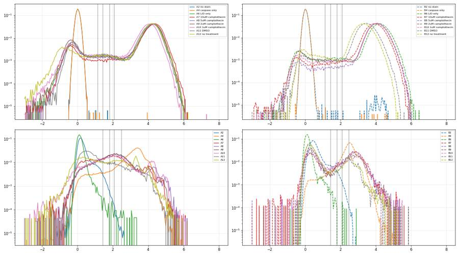
110
thinking
Viability is very low in every well, controls included (WT about 9–16% Zombie-negative, KO about 2–7%). I'm now checking whether the clog in A12 changed its result, using time segments.
111
tool call · Bash
cd /task; cat > /task/work/a12seg.py <<'EOF'
import sys; sys.path.insert(0,'/task/work')
from load import *
import pickle
d=load_all(); G=pickle.load(open('/task/work/G.pkl','rb'))
for w in ['A11','A12','B11','B12','A10']:
s,df=d[w]; c,sg=G[w]; t=df['Time'].values
for lo,hi in [(0,20),(20,24),(24,28),(28,33),(33,48),(0,48)]:
m=(t>=lo)&(t<hi)
n=m.sum(); ns=(sg&m).sum(); lv=sg&m&(df['RL3-A'].values<1000); cp=lv&(df['BL1-A'].values>=1500)
print(w,f'{lo}-{hi}s events {n} singlets {ns} cells/events {(c&m).sum()/max(n,1):.3f} live% {100*lv.sum()/max(ns,1):.1f} casp+%live {100*cp.sum()/max(lv.sum(),1):.1f} medFSC {np.median(df["FSC-A"].values[sg&m]) if ns else 0:.0f}')
EOF
python3 work/a12seg.py112
tool output
A11 0-20s events 163748 singlets 73953 cells/events 0.568 live% 12.8 casp+%live 29.1 medFSC 155776 A11 20-24s events 33013 singlets 15301 cells/events 0.613 live% 12.8 casp+%live 29.2 medFSC 159138 A11 24-28s events 33412 singlets 15670 cells/events 0.625 live% 12.9 casp+%live 30.0 medFSC 160216 A11 28-33s events 41046 singlets 19349 cells/events 0.619 live% 13.2 casp+%live 27.6 medFSC 161569 A11 33-48s events 106001 singlets 49118 cells/events 0.607 live% 13.3 casp+%live 27.3 medFSC 160810 A11 0-48s events 377220 singlets 173391 cells/events 0.593 live% 13.0 casp+%live 28.5 medFSC 158429 A12 0-20s events 2824 singlets 1004 cells/events 0.445 live% 18.5 casp+%live 64.0 medFSC 160824 A12 20-24s events 42991 singlets 19788 cells/events 0.607 live% 13.5 casp+%live 39.9 medFSC 154376 A12 24-28s events 83684 singlets 41990 cells/events 0.677 live% 15.5 casp+%live 38.3 medFSC 159302 A12 28-33s events 95812 singlets 42823 cells/events 0.633 live% 12.6 casp+%live 46.5 medFSC 159837 A12 33-48s events 183763 singlets 79181 cells/events 0.629 live% 11.1 casp+%live 48.7 medFSC 161218 A12 0-48s events 409074 singlets 184786 cells/events 0.636 live% 12.8 casp+%live 44.4 medFSC 159787 B11 0-20s events 252403 singlets 89865 cells/events 0.464 live% 4.4 casp+%live 25.9 medFSC 141836 B11 20-24s events 50374 singlets 19145 cells/events 0.510 live% 4.2 casp+%live 24.5 medFSC 143986 B11 24-28s events 50278 singlets 19053 cells/events 0.510 live% 5.0 casp+%live 24.9 medFSC 145142 B11 28-33s events 60761 singlets 23031 cells/events 0.501 live% 5.0 casp+%live 23.5 medFSC 145366 B11 33-48s events 147355 singlets 54181 cells/events 0.488 live% 4.5 casp+%live 24.5 medFSC 144807 B11 0-48s events 561171 singlets 205275 cells/events 0.483 live% 4.5 casp+%live 25.0 medFSC 143478 B12 0-20s events 240663 singlets 89669 cells/events 0.488 live% 6.9 casp+%live 25.9 medFSC 145038 B12 20-24s events 46035 singlets 17795 cells/events 0.528 live% 6.3 casp+%live 24.3 medFSC 147741 B12 24-28s events 46625 singlets 18397 cells/events 0.530 live% 6.7 casp+%live 25.8 medFSC 148233 B12 28-33s events 55719 singlets 21713 cells/events 0.520 live% 6.7 casp+%live 24.2 medFSC 148344 B12 33-48s events 149181 singlets 56948 cells/events 0.507 live% 6.6 casp+%live 24.6 medFSC 147342 B12 0-48s events 538223 singlets 204522 cells/events 0.504 live% 6.7 casp+%live 25.2 medFSC 146538 A10 0-20s events 253437 singlets 102848 cells/events 0.549 live% 14.0 casp+%live 56.8 medFSC 155034 A10 20-24s events 48259 singlets 19485 cells/events 0.581 live% 13.0 casp+%live 59.5 medFSC 157479 A10 24-28s events 46961 singlets 19123 cells/events 0.578 live% 13.4 casp+%live 57.6 medFSC 158805 A10 28-33s events 55684 singlets 22443 cells/events 0.577 live% 13.5 casp+%live 57.0 medFSC 158315 A10 33-48s events 148249 singlets 59872 cells/events 0.570 live% 13.5 casp+%live 58.1 medFSC 158102 A10 0-48s events 552590 singlets 223771 cells/events 0.563 live% 13.7 casp+%live 57.4 medFSC 156690
114
thinking
A12 is unreliable: its caspase+ and live% numbers drift across segments (live% falls from 15.5% to 11.1%), while the stable wells vary by only 2–3 points. Next I'll run a sensitivity check on the live and caspase thresholds.
115
tool call · Bash
cd /task; cat > /task/work/sens.py <<'EOF'
import sys; sys.path.insert(0,'/task/work')
from load import *
import pickle
d=load_all(); G=pickle.load(open('/task/work/G.pkl','rb'))
pd.set_option('display.width',250)
rows=[]
for w,(s,df) in d.items():
c,sg=G[w]
r=df['RL3-A'].values; b=df['BL1-A'].values
row={'well':w}
for lt in [700,1000,1500,2000]:
lv=sg&(r<lt)
row[f'live{lt}']=100*lv.sum()/sg.sum()
lv=sg&(r<1000)
for ct in [1000,1500,2000,3000]:
row[f'casp{ct}']=100*np.mean(b[lv]>=ct)
for lt in [700,1500,2000]:
lv2=sg&(r<lt); row[f'casp1500_L{lt}']=100*np.mean(b[lv2]>=1500)
row['caspAll1500']=100*np.mean(b[sg]>=1500)
row['healthy']=100*np.sum(lv&(b<1500))/sg.sum()
row['deadBL1med']=np.median(b[sg&(r>=1000)])
rows.append(row)
print(pd.DataFrame(rows).round(1).to_string())
EOF
python3 work/sens.py116
tool output
well live700 live1000 live1500 live2000 casp1000 casp1500 casp2000 casp3000 casp1500_L700 casp1500_L1500 casp1500_L2000 caspAll1500 healthy deadBL1med 0 A2 100.0 100.0 100.0 100.0 1.5 0.2 0.0 0.0 0.2 0.2 0.2 0.2 99.8 571.0 1 A4 100.0 100.0 100.0 100.0 91.0 88.2 85.7 79.8 88.2 88.2 88.2 88.2 11.8 6184.0 2 A6 10.9 12.0 13.3 14.2 0.3 0.2 0.1 0.1 0.2 0.2 0.1 0.2 11.9 217.0 3 A7 8.8 9.4 10.2 10.9 63.8 51.8 41.5 28.0 50.5 53.7 55.2 93.8 4.5 11779.0 4 A8 11.8 12.6 13.7 14.4 73.9 61.2 49.7 32.6 60.1 63.0 64.2 94.0 4.9 15413.0 5 A9 14.9 15.9 17.1 18.0 73.6 61.0 49.4 32.5 60.0 62.4 63.4 92.2 6.2 12481.0 6 A10 12.6 13.7 15.1 16.0 68.9 57.4 47.5 33.3 55.7 59.6 61.1 92.4 5.8 12728.0 7 A11 12.0 13.0 14.2 15.0 35.7 28.5 23.5 17.1 26.8 30.8 32.2 87.5 9.3 7153.0 8 A12 11.8 12.8 14.0 14.9 51.6 44.4 38.5 29.1 42.9 46.1 47.2 89.7 7.1 6469.0 9 B2 100.0 100.0 100.0 100.0 6.1 1.9 0.5 0.0 1.9 1.9 1.9 1.9 98.0 1288.5 10 B4 100.0 100.0 100.0 100.0 94.4 90.7 84.9 56.1 90.7 90.7 90.7 90.7 9.3 3477.0 11 B6 5.8 6.5 7.4 8.1 0.3 0.1 0.1 0.0 0.0 0.1 0.1 0.7 6.5 176.0 12 B7 3.2 3.6 4.2 4.6 62.8 59.6 55.6 46.2 59.8 60.2 60.4 94.2 1.5 5198.0 13 B8 2.1 2.4 2.7 3.0 59.9 55.6 51.2 40.8 55.1 55.3 55.5 94.3 1.1 4955.0 14 B9 5.2 5.8 6.5 7.0 50.3 46.9 42.6 34.4 47.0 47.2 47.6 92.0 3.1 5139.0 15 B10 4.1 4.6 5.2 5.8 47.4 43.1 38.7 31.0 42.6 44.3 45.1 93.0 2.6 6176.0 16 B11 3.9 4.5 5.3 5.8 27.3 25.0 22.6 13.0 22.8 27.2 28.3 88.8 3.4 3019.0 17 B12 5.9 6.7 7.5 8.1 28.2 25.2 22.6 15.3 23.5 26.6 27.1 87.7 5.0 3317.0
118
thinking
Results hold across gate thresholds, so I'm fixing live as RL3-A < 1000 and caspase+ as BL1-A ≥ 1500; that cut gives ≤0.2% false positives in the FMO-like controls. Building the FlowKit gating strategy next.
119
tool call · Bash
cd /task; python3 -c "
import flowkit as fk, inspect
print(fk.__version__)
print(inspect.signature(fk.gates.PolygonGate.__init__))
print(inspect.signature(fk.gates.RectangleGate.__init__))
print(inspect.signature(fk.Dimension.__init__))
print(inspect.signature(fk.GatingStrategy.add_gate))
print([m for m in dir(fk.GatingStrategy) if not m.startswith('_')])
"120
tool output
1.2.3 (self, gate_name, dimensions, vertices, use_complement=False) (self, gate_name, dimensions, use_complement=False) (self, dimension_id, compensation_ref='uncompensated', transformation_ref=None, range_min=None, range_max=None) (self, gate, gate_path, sample_id=None) ['add_comp_matrix', 'add_gate', 'add_transform', 'clear_cache', 'export_gate_hierarchy_image', 'find_matching_gate_paths', 'gate_sample', 'get_child_gate_ids', 'get_comp_matrix', 'get_gate', 'get_gate_hierarchy', 'get_gate_ids', 'get_max_depth', 'get_parent_gate_id', 'get_root_gates', 'get_transform', 'is_custom_gate', 'remove_gate', 'rename_gate', 'resolver']
121
tool call · Bash
cd /task; cat > /task/work/build_gates.py <<'EOF'
import flowkit as fk
from flowkit import Dimension
from flowkit.gates import PolygonGate, RectangleGate
LIVE_MAX = 1000.0 # RL3-A (Zombie NIR) upper bound for live
CASP_MIN = 1500.0 # BL1-A (CellEvent caspase-3/7) lower bound for positive
CELLS = [(1.0e5,5.0e3),(4.5e5,5.0e3),(1.0e6,2.5e5),(1.0e6,1.0e6),(1.0e5,1.0e6)]
SING = [(9.0e4,9.0e4/1.7),(1.05e6,1.05e6/1.7),(1.05e6,1.05e6),(9.0e4,9.0e4/0.8)]
def U(ch, **kw): return Dimension(ch, compensation_ref='uncompensated', **kw)
def build():
g = fk.GatingStrategy()
g.add_gate(PolygonGate('cells', [U('FSC-A'), U('SSC-A')], CELLS), ('root',))
g.add_gate(PolygonGate('singlets', [U('FSC-A'), U('FSC-H')], SING), ('root','cells'))
p = ('root','cells','singlets')
g.add_gate(RectangleGate('live', [U('RL3-A', range_max=LIVE_MAX)]), p)
g.add_gate(RectangleGate('dead', [U('RL3-A', range_min=LIVE_MAX)]), p)
g.add_gate(RectangleGate('live_casp_pos', [U('BL1-A', range_min=CASP_MIN)]), p+('live',))
g.add_gate(RectangleGate('live_casp_neg', [U('BL1-A', range_max=CASP_MIN)]), p+('live',))
g.add_gate(RectangleGate('dead_casp_pos', [U('BL1-A', range_min=CASP_MIN)]), p+('dead',))
g.add_gate(RectangleGate('dead_casp_neg', [U('BL1-A', range_max=CASP_MIN)]), p+('dead',))
return g
if __name__ == '__main__':
g = build()
with open('/task/outputs/gates.xml','wb') as fh:
fk.export_gatingml(g, fh)
g2 = fk.parse_gating_xml('/task/outputs/gates.xml')
print(g2.get_gate_hierarchy(output='ascii'))
EOF
python3 work/build_gates.py122
tool output (error)
Exit code 1
Traceback (most recent call last):
File "/task/work/build_gates.py", line 3, in <module>
from flowkit.gates import PolygonGate, RectangleGate
ModuleNotFoundError: No module named 'flowkit.gates'123
tool call · Bash
cd /task; sed -i 's/^from flowkit.gates import PolygonGate, RectangleGate/PolygonGate = fk.gates.PolygonGate; RectangleGate = fk.gates.RectangleGate/' work/build_gates.py; python3 work/build_gates.py
124
tool output
root
╰── cells
╰── singlets
├── live
│ ├── live_casp_pos
│ ╰── live_casp_neg
╰── dead
├── dead_casp_pos
╰── dead_casp_neg125
agent
Gates export and reload. Now applying the reloaded strategy to all 18 files to generate counts.csv, and cross-checking against my numpy calculation.
126
tool call · Bash
cd /task; cat > /task/work/make_counts.py <<'EOF'
import flowkit as fk, pandas as pd, numpy as np
lay=pd.read_csv('/task/inputs/plate_layout.csv')
g=fk.parse_gating_xml('/task/outputs/gates.xml')
ROLE={'cells':'cells','singlets':'singlets','live':'live','live_casp_pos':'marker_positive'}
ORDER=['cells','singlets','live','live_casp_pos','live_casp_neg','dead','dead_casp_pos','dead_casp_neg']
rows=[]
for _,r in lay.iterrows():
s=fk.Sample('/task/inputs/raw/'+r.file)
res=g.gate_sample(s)
rep=res.report
rows.append(dict(file=r.file,well=r.well,population='all_events',role='other',parent='none',count=int(s.event_count),pct_of_parent=''))
cnt={'all_events':s.event_count}
for pop in ORDER:
sub=rep[rep.gate_name==pop]
assert len(sub)==1, (pop,len(sub))
row=sub.iloc[0]
parent=row['parent'] if row['parent']!='root' else 'all_events'
c=int(row['count']); cnt[pop]=c
pct=100.0*c/cnt[parent] if cnt[parent]>0 else 0.0
rows.append(dict(file=r.file,well=r.well,population=pop,role=ROLE.get(pop,'other'),parent=parent,count=c,pct_of_parent=round(pct,4)))
df=pd.DataFrame(rows)
df.to_csv('/task/outputs/counts.csv',index=False)
piv=df.pivot(index='well',columns='population',values='count')[['all_events']+ORDER]
print(piv.loc[lay.well].to_string())
EOF
python3 work/make_counts.py127
tool output
population all_events cells singlets live live_casp_pos live_casp_neg dead dead_casp_pos dead_casp_neg well A2 365736 210549 154256 154255 343 153912 1 0 1 A4 440820 251603 188474 188473 166320 22153 1 1 0 A6 412724 236144 180508 21600 36 21564 158908 355 158553 A7 395514 237088 185245 17470 9050 8420 167775 164759 3016 A8 384992 230443 183618 23154 14168 8986 160464 158353 2111 A9 428254 249772 192574 30637 18696 11941 161937 158885 3052 A10 552590 310870 223771 30647 17604 13043 193124 189202 3922 A11 377220 223854 173391 22532 6424 16108 150859 145376 5483 A12 409074 260318 184786 23599 10485 13114 161187 155339 5848 B2 392795 219136 181132 181076 3487 177589 56 21 35 B4 605670 335380 257577 257569 233630 23939 8 8 0 B6 457465 220593 173857 11337 6 11331 162520 1250 161270 B7 612174 309455 231748 8450 5039 3411 223298 213362 9936 B8 493435 259210 204398 4878 2710 2168 199520 190024 9496 B9 425772 199411 162785 9414 4413 5001 153371 145287 8084 B10 539106 269463 210401 9619 4150 5469 200782 191497 9285 B11 561171 270781 205275 9338 2339 6999 195937 180016 15921 B12 538223 271057 204521 13712 3460 10252 190809 175880 14929
129
agent
FlowKit counts match my independent numpy calculation (±1 event at polygon boundaries). Now running per-well QC metrics to back the flags.
130
tool call · Bash
cd /task; cat > /task/work/qc.py <<'EOF'
import sys; sys.path.insert(0,'/task/work')
from load import *
import pickle
d=load_all()
g=fk.parse_gating_xml('/task/outputs/gates.xml')
pd.set_option('display.width',250)
rows=[]
for w,(s,df) in d.items():
res=g.gate_sample(s)
sg=res.get_gate_membership('singlets'); lv=res.get_gate_membership('live'); cp=res.get_gate_membership('live_casp_pos')
t=df['Time'].values
h1=np.histogram(t,np.arange(0,47,1.0))[0]
h=np.histogram(t,np.arange(0,47,0.25))[0]
med=np.median(h)
seg=np.linspace(0,t.max(),6)
casp=[];liv=[]
for a,b in zip(seg[:-1],seg[1:]):
m=(t>=a)&(t<b)
casp.append(100*cp[m].sum()/max(lv[m].sum(),1)); liv.append(100*lv[m].sum()/max(sg[m].sum(),1))
rows.append(dict(well=w,events=len(t),singlets=sg.sum(),live=lv.sum(),pct_live=100*lv.sum()/sg.sum(),casp_live=100*cp.sum()/max(lv.sum(),1),
rate_cv_1s=np.std(h1)/np.mean(h1), n_empty_025s=(h[:-2]<0.05*med).sum(), max_burst=h.max()/med,
casp_seg_range=max(casp)-min(casp) if lv.sum()>1000 and cp.sum()>100 else np.nan, live_seg_range=max(liv)-min(liv),
frac_cells=sg.sum()/len(t)))
q=pd.DataFrame(rows).round(3)
print(q.to_string())
q.to_csv('/task/work/qc.csv',index=False)
EOF
python3 work/qc.py131
tool output
well events singlets live pct_live casp_live rate_cv_1s n_empty_025s max_burst casp_seg_range live_seg_range frac_cells 0 A2 365736 154256 154255 99.999 0.222 0.063 0 1.619 0.108 0.003 0.422 1 A4 440820 188474 188473 99.999 88.246 0.042 0 1.273 0.981 0.003 0.428 2 A6 412724 180508 21600 11.966 0.167 0.061 0 1.286 NaN 1.528 0.437 3 A7 395514 185245 17470 9.431 51.803 0.056 0 1.125 1.903 1.067 0.468 4 A8 384992 183618 23154 12.610 61.190 0.117 0 1.864 2.419 1.635 0.477 5 A9 428254 192574 30637 15.909 61.024 0.068 0 1.340 2.160 1.487 0.450 6 A10 552590 223771 30647 13.696 57.441 0.094 0 1.189 2.859 1.580 0.405 7 A11 377220 173391 22532 12.995 28.511 0.044 0 1.098 2.532 0.683 0.460 8 A12 409074 184786 23599 12.771 44.430 0.935 80 2.576 33.110 16.222 0.452 9 B2 392795 181132 181076 99.969 1.926 0.043 0 1.075 0.516 0.042 0.461 10 B4 605670 257577 257569 99.997 90.706 0.054 0 1.103 1.787 0.006 0.425 11 B6 457465 173857 11337 6.521 0.053 0.046 0 1.091 NaN 0.470 0.380 12 B7 612174 231748 8450 3.646 59.633 0.052 0 1.128 2.429 0.258 0.379 13 B8 493435 204398 4878 2.387 55.556 0.095 0 2.017 4.082 0.315 0.414 14 B9 425772 162785 9414 5.783 46.877 0.068 0 1.103 1.396 0.741 0.382 15 B10 539106 210401 9619 4.572 43.144 0.054 0 1.117 1.908 0.416 0.390 16 B11 561171 205275 9338 4.549 25.048 0.055 0 1.099 2.145 0.627 0.366 17 B12 538223 204521 13712 6.704 25.233 0.067 0 1.178 2.718 0.706 0.380
133
thinking
A12 is the clear outlier, with an event-rate CV of 0.94 and a 33-point drift within the well; I'm checking whether the brief bursts in A8 and B8 matter.
134
tool call · Bash
cd /task; cat > /task/work/burst.py <<'EOF'
import sys; sys.path.insert(0,'/task/work')
from load import *
d=load_all()
g=fk.parse_gating_xml('/task/outputs/gates.xml')
for w in ['A8','B8']:
s,df=d[w]; res=g.gate_sample(s)
t=df['Time'].values
h=np.histogram(t,np.arange(0,47,0.25))[0]; i=np.argmax(h); lo=i*0.25
m=(t>=lo-0.25)&(t<lo+0.5)
sg=res.get_gate_membership('singlets'); lv=res.get_gate_membership('live'); cp=res.get_gate_membership('live_casp_pos')
print(w,'burst at %.2f s'%lo,'events in window',m.sum(),'(%.2f%% of file)'%(100*m.sum()/len(t)),'median 0.25s bin',np.median(h),'max',h.max())
print(' casp+%%live with window %.2f, without %.2f; live%% with %.2f without %.2f'%(100*cp.sum()/lv.sum(),100*cp[~m].sum()/lv[~m].sum(),100*lv.sum()/sg.sum(),100*lv[~m].sum()/sg[~m].sum()))
print(' window medFSC %.0f vs file %.0f; singlet frac window %.3f vs file %.3f'%(np.median(df['FSC-A'][m]),np.median(df['FSC-A']),sg[m].mean(),sg.mean()))
EOF
python3 work/burst.py135
tool output
A8 burst at 3.50 s events in window 10461 (2.72% of file) median 0.25s bin 2110.0 max 3933 casp+%live with window 61.19, without 61.27; live% with 12.61 without 12.60 window medFSC 121214 vs file 131300; singlet frac window 0.477 vs file 0.477 B8 burst at 4.00 s events in window 14246 (2.89% of file) median 0.25s bin 2694.0 max 5434 casp+%live with window 55.56, without 55.75; live% with 2.39 without 2.39 window medFSC 100834 vs file 109014; singlet frac window 0.413 vs file 0.414
137
agent
Both bursts are harmless (<0.2-point effect), so A8 and B8 get keep_with_note. Next is the figure. Loading the dataviz skill first.
138
tool call · Skill
{
"skill": "dataviz"
}139
tool output
Launching skill: dataviz
140
tool call · Bash
cd /tmp/claude-0/bundled-skills/2.1.322/abe019a7db9028ae2d7b2869b92bc24e/dataviz; sed -n 1,200p references/palette.md | head -150
141
tool output
# Reference palette
This is the **reference instance** of the data-viz method: every parameter the
method needs, filled in with a validated default palette. The rest of the skill
is system-agnostic - **to target your brand, substitute this file's values** and
re-run the validator. Nothing else changes.
## How to use these values
Everything below is plain hex. In an HTML chart, **define the slots you use as
CSS custom properties in a local `<style>` block** at the top of the file, then
reference them by role throughout - so the light/dark values swap in one place,
and the chart body is written against roles rather than raw hex:
```css
.viz-root {
color-scheme: light;
--surface-1: #fcfcfb; /* chart surface */
--text-primary: #0b0b0b;
--text-secondary: #52514e;
--series-1: #2a78d6; /* categorical slot 1 */
/* ...only the roles this chart uses */
}
@media (prefers-color-scheme: dark) {
:root:where(:not([data-theme="light"])) .viz-root {
color-scheme: dark;
--surface-1: #1a1a19;
--text-primary: #f0efec;
--text-secondary: #c3c2b7;
--series-1: #3987e5;
}
}
:root[data-theme="dark"] .viz-root {
color-scheme: dark;
--surface-1: #1a1a19;
--text-primary: #f0efec;
--text-secondary: #c3c2b7;
--series-1: #3987e5;
}
```
Declare the dark values under both scopes as above - the media query covers
the OS setting; the `data-theme` scope covers the viewer's theme toggle,
which must win both ways (the `:not(...)` guard lets a light stamp beat
OS-dark; `:where()` keeps the media block below the toggle scope).
## Categorical palette
Both modes are selected. The dark column is the same eight hues stepped for the
dark surface, not a separate palette:
| Slot | Hue | Light | Dark |
|------|-----|-------|------|
| 1 | blue | `#2a78d6` | `#3987e5` |
| 2 | orange | `#eb6834` | `#d95926` |
| 3 | aqua | `#1baf7a` | `#199e70` |
| 4 | yellow | `#eda100` | `#c98500` |
| 5 | magenta | `#e87ba4` | `#d55181` |
| 6 | green | `#008300` | `#008300` |
| 7 | violet | `#6250d6` | `#9085e9` |
| 8 | red | `#e34948` | `#e66767` |
This order passes every hard gate in both modes on the default *adjacent*
pairlist (stacks, bars, lines): worst adjacent CVD Delta E 9.1 light / 8.4 dark
(OKLab ×100, >=8 target), worst adjacent normal-vision Delta E 19.6 light / 19.3
dark (>=15 floor). Under `--pairs all` (scatter, bubble, choropleth, small
multiples) the full eight cannot clear the floors - with all 28 pairs in
play no ordering can (the pairlist no longer depends on order), and
re-stepping is off the table by the documented-palette rule - so those
chart forms carry a series cap: **the first three slots validate all-pairs
in both modes** (worst pair CVD Delta E 9.2 light / 9.4 dark, normal-vision 24.0
light / 20.9 dark - clear of the CVD warn band). Past three, fold to "Other" or
facet: the fourth slot puts yellow and orange on screen
together, and that pair fails the all-pairs floors (normal-vision 13.7
light; CVD 4.8 dark). Three light-mode slots (magenta, yellow, aqua)
sit below 3:1 contrast on the light surface: the **relief rule** applies (ship
visible direct labels or the table view). The dark steps were chosen for the
dark band (OKLCH L ~ 0.48-0.67, >= 3:1 on the dark surface) and validated as a
set. (Ordering history: adopted July 2026 for its more harmonious opening -
the same eight hues and steps as its predecessor, re-ordered, zero hex
changes. The predecessor validated its first FOUR slots all-pairs, with its
dark run in the 6-8 CVD warn band, so secondary encoding was required there;
this order deliberately trades that fourth slot - yellow now sits beside orange -
for better-looking leading colors. Revisit the trade if yellow<->orange
confusion shows up in real charts with four or more series; undoing it is a
pure re-order. Light slot 7 has since been lightened, `#4a3aa7` -> `#6250d6`
(August 2026); the adjacent-pair figures above are unchanged by that move, the
non-adjacent blue<->violet pair now sits below both floors under `--pairs all`
(normal-vision 10.5, CVD 4.5 - inside the range the series cap already
excludes), and the order enumeration was run with the earlier value.) When you
swap in your own ramps, hold your palette to the full gate.
The slot **ordering** is the CVD-safety mechanism, not cosmetic - candidate
orderings were enumerated and only those clearing every adjacent gate in both
modes kept (see `color-formula.md` § Themes); this default is one of the
passing orders, picked among them for its opening colors. When you swap in
your brand's hues, do the same: run the validator on candidate orderings and
choose only among the passing ones.
## Sequential hue
Default single hue: **blue**, light->dark. When two sequential contexts appear at
once, the second takes the next categorical slot's hue (orange), each as its own
one-hue ramp.
| step | hex | step | hex | step | hex | step | hex |
|---|---|---|---|---|---|---|---|
| 100 | `#cde2fb` | 250 | `#86b6ef` | 400 | `#3987e5` | 550 | `#1c5cab` |
| 150 | `#b7d3f6` | 300 | `#6da7ec` | 450 | `#2a78d6` | 600 | `#184f95` |
| 200 | `#9ec5f4` | 350 | `#5598e7` | 500 | `#256abf` | 650 | `#104281` |
| | | | | | | 700 | `#0d366b` |
The full 100->700 range is for **sequential** encoding (continuous magnitude -
heatmaps, choropleths) where the lightest step means "near zero" and is allowed
to recede toward the surface. For an **ordinal** ramp (discrete ordered marks -
funnel stages, tiers - validated with `--ordinal`), the step nearest the surface
must still clear 2:1: on light, start no lighter than **step 250** (`#86b6ef`,
2.06:1); on dark, go no darker than **step 600** (`#184f95`, 2.15:1).
## Diverging pair
**blue <-> red** - warm/cool poles that read as opposite. Neutral midpoint is gray
(light `#f0efec`, dark `#383835`). Equal step count per arm. (blue<->aqua was
rejected - both cool, the midpoint doesn't read as "nothing".)
## Status palette (fixed - never themed)
| role
… [1,361 more characters not shown]143
tool call · Bash
cd /tmp/claude-0/bundled-skills/2.1.322/abe019a7db9028ae2d7b2869b92bc24e/dataviz; node scripts/validate_palette.js "#2a78d6,#eb6834" --mode light 2>&1 | tail -20; sed -n 1,80p references/anti-patterns.md | head -60
144
tool output
/bin/bash: line 1: node: command not found # Anti-patterns - what goes wrong Check every chart against this list. If your output matches an entry, it is wrong - fix it before shipping. These are real failure modes, each caught in shipping dashboards. ## Color & encoding **Bad: Dual-axis charts (two y-scales on one plot).** Why it misleads: the alignment of the two scales is arbitrary, so the chart invents a correlation that isn't in the data. Real example: an "Adoption" chart plotting Users (0-30k) against Sessions (0-800k) - a reviewer flagged it as looking "hallucinated." Good: Do instead: two charts, small multiples, or index both series to a common base (=100 at t0) on **one** axis. **Bad: Recolor-on-filter.** Assigning colors by current rank, so filtering out a series repaints the survivors. Why: a reader who learned "Acme is blue" is now misled. Good: Color follows the entity, not its row number. Survivors keep their hue. **Bad: Cycling / generating hues past 8.** A 9th categorical color, generated or reused. Why: indistinguishable from an existing slot under CVD; breaks the order check. Good: Fold the tail into "Other," facet into small multiples, or use composite encoding. **Bad: Eyeballing colorblind-safety.** "These look different enough." Good: Run `scripts/validate_palette.js`. Adjacent Delta E >= 8 (OKLab ×100), or 6-8 WITH secondary encoding. **Bad: A value-ramp on nominal categories.** Coloring each bar darker-where-bigger when the categories have no natural order (products, teams, endpoints). Why: it double-encodes bar length as hue, burns the only free channel on information the chart already shows, and fails the categorical checks by design (a ramp spans the lightness band and drops below the chroma floor). Good: One series -> one color (slot 1) for every bar. Ordered categories (funnel, tiers, age bands) -> the ordinal ramp, validated with `--ordinal`. **Bad: Rainbow / non-neighbor sequential.** A multi-hue ramp for magnitude. Good: One hue, light->dark. (Analogous neighbors or semantic heat are the only multi-hue sequential exceptions, always with a scale legend.) **Bad: A hue at the diverging midpoint, or two cool hues as the two poles.** Why: the midpoint must read as "nothing"; poles must read as opposite. blue<->aqua fails this (both cool); blue<->red or blue<->orange succeed (warm/cool). Good: Two hues that read as opposite + a neutral gray midpoint. **Bad: Status color used for a non-status series** (or a series color used for status). Good: Status tokens only when the color *means* good/bad; categorical when it's identity. ## Form **Bad: Eight categorical hues when the story is one number.** The most common way a chart misses its point. Good: Emphasis (highlight one, gray the rest), or a stat tile / hero number. **Bad: A one-bar bar chart, or a 2-slice pie.** Good: A stat tile. The number is the chart. **Bad: A donut/pie for comparing close values.** Good: Ranked bars, or the numbers. Part-to-whole at a glance only, <= 6 segments: the tall segmented bar (`choosing-a-form.md`). Shell cwd was reset to /task
146
thinking
Node isn't installed, so I'm using the reference palette's first two slots with marker shape as a second cue, and I'm building condition_summary.csv from counts.csv next.
147
tool call · Bash
cd /task; cat > /task/work/summary.py <<'EOF'
import pandas as pd, numpy as np
c=pd.read_csv('/task/outputs/counts.csv')
piv=c.pivot(index='well',columns='population',values='count')
casp=100*piv['live_casp_pos']/piv['live']
viab=100*piv['live']/piv['singlets']
EXCL={'A12'}
M1='live_casp_pos / live x 100 (% CellEvent caspase-3/7+ among Zombie NIR- live singlets)'
M2='live / singlets x 100 (% Zombie NIR- viable among singlet cells)'
rows=[]
def add(name,wells,series,metric,norm='none',scale=None):
wells=[w for w in wells if w not in EXCL]
v=np.array([series[w] for w in wells],float)
if scale is not None: v=v/scale
rows.append(dict(condition=name,wells=';'.join(wells),n_wells_used=len(wells),mean=round(v.mean(),3),
sd=round(v.std(ddof=1),3) if len(v)>1 else '',metric_definition=metric,normalisation_applied=norm))
doses=[('CPT1uM','A10','B10'),('CPT2uM','A9','B9'),('CPT5uM','A8','B8'),('CPT10uM','A7','B7')]
# primary metric
add('WT_DMSO_pctCaspPos_live',['A11'],casp,M1)
for n,a,b in doses: add(f'WT_{n}_pctCaspPos_live',[a],casp,M1)
add('WT_CPTallDoses_pctCaspPos_live',['A7','A8','A9','A10'],casp,M1)
add('KO_DMSO_pctCaspPos_live',['B11'],casp,M1)
add('KO_noTreatment_pctCaspPos_live',['B12'],casp,M1)
add('KO_DMSOorNoTreatment_pctCaspPos_live',['B11','B12'],casp,M1)
for n,a,b in doses: add(f'KO_{n}_pctCaspPos_live',[b],casp,M1)
add('KO_CPTallDoses_pctCaspPos_live',['B7','B8','B9','B10'],casp,M1)
# fold over own-genotype DMSO
for g,dm,idx in [('WT','A11',1),('KO','B11',2)]:
for n,a,b in doses:
w=[a,b][idx-1]
add(f'{g}_{n}_pctCaspPos_live_foldOverDMSO',[w],casp,M1,norm=f'pctCaspPos_live(well) / pctCaspPos_live({dm}, {g} DMSO)',scale=casp[dm])
# viability
add('WT_DMSO_pctLive',['A11'],viab,M2)
add('WT_LDonly_untreated_pctLive',['A6'],viab,M2)
add('WT_untreatedOrDMSO_pctLive',['A6','A11','A12'],viab,M2)
for n,a,b in doses: add(f'WT_{n}_pctLive',[a],viab,M2)
add('KO_DMSO_pctLive',['B11'],viab,M2)
add('KO_noTreatment_pctLive',['B12'],viab,M2)
add('KO_LDonly_untreated_pctLive',['B6'],viab,M2)
add('KO_untreatedOrDMSO_pctLive',['B6','B11','B12'],viab,M2)
for n,a,b in doses: add(f'KO_{n}_pctLive',[b],viab,M2)
df=pd.DataFrame(rows)
df.to_csv('/task/outputs/condition_summary.csv',index=False)
pd.set_option('display.width',250); pd.set_option('display.max_colwidth',40)
print(df.drop(columns=['metric_definition']).to_string())
print(casp.round(2).to_dict()); print(viab.round(2).to_dict())
EOF
python3 work/summary.py148
tool output
condition wells n_wells_used mean sd normalisation_applied
0 WT_DMSO_pctCaspPos_live A11 1 28.511 none
1 WT_CPT1uM_pctCaspPos_live A10 1 57.441 none
2 WT_CPT2uM_pctCaspPos_live A9 1 61.024 none
3 WT_CPT5uM_pctCaspPos_live A8 1 61.190 none
4 WT_CPT10uM_pctCaspPos_live A7 1 51.803 none
5 WT_CPTallDoses_pctCaspPos_live A7;A8;A9;A10 4 57.865 4.396 none
6 KO_DMSO_pctCaspPos_live B11 1 25.048 none
7 KO_noTreatment_pctCaspPos_live B12 1 25.233 none
8 KO_DMSOorNoTreatment_pctCaspPos_live B11;B12 2 25.141 0.131 none
9 KO_CPT1uM_pctCaspPos_live B10 1 43.144 none
10 KO_CPT2uM_pctCaspPos_live B9 1 46.877 none
11 KO_CPT5uM_pctCaspPos_live B8 1 55.556 none
12 KO_CPT10uM_pctCaspPos_live B7 1 59.633 none
13 KO_CPTallDoses_pctCaspPos_live B7;B8;B9;B10 4 51.302 7.608 none
14 WT_CPT1uM_pctCaspPos_live_foldOverDMSO A10 1 2.015 pctCaspPos_live(well) / pctCaspPos_live(A11, WT DMSO)
15 WT_CPT2uM_pctCaspPos_live_foldOverDMSO A9 1 2.140 pctCaspPos_live(well) / pctCaspPos_live(A11, WT DMSO)
16 WT_CPT5uM_pctCaspPos_live_foldOverDMSO A8 1 2.146 pctCaspPos_live(well) / pctCaspPos_live(A11, WT DMSO)
17 WT_CPT10uM_pctCaspPos_live_foldOverDMSO A7 1 1.817 pctCaspPos_live(well) / pctCaspPos_live(A11, WT DMSO)
18 KO_CPT1uM_pctCaspPos_live_foldOverDMSO B10 1 1.722 pctCaspPos_live(well) / pctCaspPos_live(B11, KO DMSO)
19 KO_CPT2uM_pctCaspPos_live_foldOverDMSO B9 1 1.871 pctCaspPos_live(well) / pctCaspPos_live(B11, KO DMSO)
20 KO_CPT5uM_pctCaspPos_live_foldOverDMSO B8 1 2.218 pctCaspPos_live(well) / pctCaspPos_live(B11, KO DMSO)
21 KO_CPT10uM_pctCaspPos_live_foldOverDMSO B7 1 2.381 pctCaspPos_live(well) / pctCaspPos_live(B11, KO DMSO)
22 WT_DMSO_pctLive A11 1 12.995 none
23 WT_LDonly_untreated_pctLive A6 1 11.966 none
24 WT_untreatedOrDMSO_pctLive A6;A11 2 12.481 0.727 none
25 WT_CPT1uM_pctLive A10 1 13.696 none
26 WT_CPT2uM_pctLive A9 1 15.909 none
27 WT_CPT5uM_pctLive A8 1 12.610 none
28 WT_CPT10uM_pctLive A7 1 9.431 none
29 KO_DMSO_pctLive B11 1 4.549 none
30 KO_noTreatment_pctLive B12 1 6.704 none
31 KO_LDonly_untreated_pctLive B6 1 6.521 none
32 KO_untreatedOrDMSO_pctLive B6;B11;B12 3 5.925 1.195 none
33 KO_CPT1uM_pctLive B10 1 4.572 none
34 KO_CPT2uM_pctLive B9 1 5.783 none
35 KO_CPT5uM_pctLive B8 1 2.387 none
36 KO_CPT10uM_pctLive B7 1 3.646 none
{'A10': 57.44, 'A11': 28.51, 'A12': 44.43, 'A2': 0.22, 'A4': 88.25, 'A6': 0.17, 'A7': 51.8, 'A8': 61.19, 'A9': 61.02, 'B10': 43.14, 'B11': 25.05, 'B12': 25.23, 'B2': 1.93, 'B4': 90.71, 'B6': 0.05, 'B7': 59.63, 'B8': 55.56, 'B9': 46.88}
{'A10': 13.7, 'A11': 12.99, 'A12': 12.77, 'A2': 100.0, 'A4': 100.0, 'A6': 11.97, 'A7': 9.43, 'A8': 12.61, 'A9': 15.91, 'B10': 4.57, 'B11': 4.55, 'B12': 6.7, 'B2': 99.97, 'B4': 100.0, 'B6': 6.52, 'B7': 3.65, 'B8': 2.39, 'B9': 5.78}150
agent
Adding total-caspase+ rows (live + dead) for the key wells, to show why the live gate matters. Then writing flags.csv.
151
tool call · Bash
cd /task; cat >> /task/work/summary.py <<'EOF'
tot=100*(piv['live_casp_pos']+piv['dead_casp_pos'])/piv['singlets']
M3='(live_casp_pos + dead_casp_pos) / singlets x 100 (% CellEvent caspase-3/7+ among all singlets, live+dead)'
rows=[]
for name,w in [('WT_DMSO_pctCaspPos_allSinglets','A11'),('WT_CPT10uM_pctCaspPos_allSinglets','A7'),('KO_DMSO_pctCaspPos_allSinglets','B11'),('KO_CPT10uM_pctCaspPos_allSinglets','B7')]:
add(name,[w],tot,M3)
df2=pd.concat([df,pd.DataFrame(rows)],ignore_index=True)
df2.to_csv('/task/outputs/condition_summary.csv',index=False)
print(df2.tail(4).drop(columns=['metric_definition']).to_string())
EOF
python3 work/summary.py | tail -5
cat > /task/work/flags.py <<'EOF'
import pandas as pd
lay=pd.read_csv('/task/inputs/plate_layout.csv')
F={
'A12':('clog','Fluidics interruption: only 2,824 of 409,074 events (0.7%) were acquired in the first 20 s (80 empty 0.25-s bins; other wells 0) followed by a burst of up to 2.6x the median rate; event-rate CV 0.94 vs <=0.12 in all other wells. Signals drift after the restart: %caspase+ of live rises from 38.3% (24-28 s) to 48.7% (33-48 s) and %live falls 15.5% to 11.1%, whereas stable wells vary <=3 points across segments (A11 27.3-30.0%). Sub-threshold FSC-A (<22k) 0.78% and RL3<-2000 0.15%, both highest on the plate. Whole-file %caspase+ of live 44.4% cannot be trusted.','exclude'),
'A8':('other','Single transient event burst at ~3.5 s (0.25-s bin 1.86x median rate; window holds 2.7% of events). Removing the window changes %caspase+ of live 61.19% -> 61.27% and %live 12.61% -> 12.60%, so the result is unaffected.','keep_with_note'),
'B8':('other','Single transient event burst at ~4.0 s (0.25-s bin 2.0x median; 2.9% of events); removing it changes %caspase+ of live 55.56% -> 55.75%. Lowest viability on the plate (2.39% live; 4,878 live singlets, binomial SE on %caspase+ ~0.7 points), so this well is still usable but most sensitive to live-gate placement.','keep_with_note'),
}
rows=[]
for _,r in lay.iterrows():
it,ev,dec=F.get(r.well,('none','',"keep"))
rows.append(dict(file=r.file,well=r.well,issue_type=it,evidence=ev,decision=dec))
pd.DataFrame(rows).to_csv('/task/outputs/flags.csv',index=False)
print(pd.DataFrame(rows)[['well','issue_type','decision']].to_string())
EOF
python3 work/flags.py152
tool output
condition wells n_wells_used mean sd normalisation_applied 37 WT_DMSO_pctCaspPos_allSinglets A11 1 87.548 none 38 WT_CPT10uM_pctCaspPos_allSinglets A7 1 93.827 none 39 KO_DMSO_pctCaspPos_allSinglets B11 1 88.834 none 40 KO_CPT10uM_pctCaspPos_allSinglets B7 1 94.241 none well issue_type decision 0 A2 none keep 1 A4 none keep 2 A6 none keep 3 A7 none keep 4 A8 other keep_with_note 5 A9 none keep 6 A10 none keep 7 A11 none keep 8 A12 clog exclude 9 B2 none keep 10 B4 none keep 11 B6 none keep 12 B7 none keep 13 B8 other keep_with_note 14 B9 none keep 15 B10 none keep 16 B11 none keep 17 B12 none keep
154
agent
Writing the figure: dose-response for % caspase+ of live and % viable, plus representative gating plots.
155
tool call · Bash
cd /task; cat > /task/work/figure.py <<'EOF'
import flowkit as fk, pandas as pd, numpy as np
import matplotlib; matplotlib.use('Agg'); import matplotlib.pyplot as plt
from matplotlib.colors import LogNorm, LinearSegmentedColormap
c=pd.read_csv('/task/outputs/counts.csv'); lay=pd.read_csv('/task/inputs/plate_layout.csv')
piv=c.pivot(index='well',columns='population',values='count')
casp=100*piv['live_casp_pos']/piv['live']; viab=100*piv['live']/piv['singlets']
BLUE='#2a78d6'; ORANGE='#eb6834'; INK='#0b0b0b'; INK2='#52514e'; GRID='#e6e5e1'
plt.rcParams.update({'font.size':10,'axes.edgecolor':INK2,'axes.labelcolor':INK,'xtick.color':INK2,'ytick.color':INK2,'axes.spines.top':False,'axes.spines.right':False})
xlab=['No tx','DMSO','1','2','5','10']
WT={'No tx':'A12','DMSO':'A11','1':'A10','2':'A9','5':'A8','10':'A7'}
KO={'No tx':'B12','DMSO':'B11','1':'B10','2':'B9','5':'B8','10':'B7'}
fig=plt.figure(figsize=(15,10.5),facecolor='#fcfcfb')
gs=fig.add_gridspec(2,4,height_ratios=[1.15,1],hspace=0.42,wspace=0.38)
axA=fig.add_subplot(gs[0,0:2]); axB=fig.add_subplot(gs[0,2:4])
def dose_panel(ax,series,ylabel,title,ymax):
x=np.arange(len(xlab))
for g,mp,col,mk,off in [('WT',WT,BLUE,'o',-0.08),('PGRN-KO',KO,ORANGE,'s',0.08)]:
xs=[];ys=[]
for i,k in enumerate(xlab):
w=mp[k]; v=series[w]
if w=='A12':
ax.plot(i+off,v,mk,ms=9,mfc='white',mec='#9a9893',mew=1.5,zorder=3)
ax.annotate('A12 excluded\n(clog)',(i+off,v),xytext=(8,-2),textcoords='offset points',fontsize=8,color=INK2,va='center')
continue
ax.plot(i+off,v,mk,ms=9,color=col,mec='#fcfcfb',mew=1.5,zorder=4)
if i>=1: xs.append(i+off); ys.append(v)
ax.plot(xs,ys,'-',color=col,lw=2,zorder=2)
ax.annotate(g,(xs[-1],ys[-1]),xytext=(10,0),textcoords='offset points',color=INK,fontsize=10,va='center',fontweight='bold')
ax.set_xticks(x); ax.set_xticklabels(xlab); ax.set_xlim(-0.5,len(xlab)-0.2)
ax.set_xlabel('Camptothecin (µM, 4.5 h) — controls left of the dashed line')
ax.axvline(1.5,color=GRID,lw=1,ls='--',zorder=0)
ax.set_ylabel(ylabel); ax.set_ylim(0,ymax); ax.grid(axis='y',color=GRID,lw=0.8); ax.set_axisbelow(True)
ax.set_title(title,loc='left',fontsize=11.5,color=INK,fontweight='bold')
dose_panel(axA,casp,'% caspase-3/7+ of live singlets','A Caspase-3/7+ among live (Zombie NIR−) neurons',75)
dose_panel(axB,viab,'% live (Zombie NIR−) of singlets','B Viability at acquisition',20)
for w,lab,yo in [('A11','28.5',8),('B11','25.0',-14),('A7','51.8',-14),('B7','59.6',8)]:
k=[kk for kk,vv in {**WT,**KO}.items() if vv==w]
for ax,ser in [(axA,casp),(axB,viab)]:
for mp,yo in [(WT,9),(KO,-15)]:
for i,k in enumerate(xlab):
w=mp[k]
if w=='A12': continue
ax.annotate(f'{ser[w]:.1f}',(i+(-0.08 if mp is WT else 0.08),ser[w]),xytext=(0,yo if not (ax is axB and mp is KO) else -15),textcoords='offset points',ha='center',fontsize=7.5,color=INK2)
# density panels
cmap=LinearSegmentedColormap.from_list('b',['#e8f1fc','#9ec5f4','#3987e5','#1c5cab','#0d366b'])
g=fk.parse_gating_xml('/task/outputs/gates.xml')
def asn(x): return np.arcsinh(np.asarray(x)/500.)
ticks=[0,1e3,1e4,1e5]; tl=['0','10³','10⁴','10⁵']
for j,(w,t) in enumerate([('A11','WT DMSO'),('A7','WT 10 µM CPT'),('B11','KO DMSO'),('B7','KO 10 µM CPT')]):
ax=fig.add_subplot(gs[1,j])
f=lay.set_index('well').loc[w,'file']; s=fk.Sample('/task/inputs/raw/'+f)
r=g.gate_sample(s); sg=r.get_gate_membership('singlets')
df=s.as_dataframe(source='raw'); df.columns=[cc[0] for cc in df.columns]
x=asn(df['BL1-A'][sg]); y=asn(df['RL3-A'][sg])
ax.hist2d(x,y,bins=180,range=[[-2,6.5],[-2,6.5]],norm=LogNorm(),cmap=cmap)
ax.axhline(asn(1000),color=INK,lw=1); ax.plot([asn(1500)]*2,[-2,asn(1000)],color=INK,lw=1)
ax.set_xticks(asn(ticks)); ax.set_xticklabels(tl); ax.set_yticks(asn(ticks)); ax.set_yticklabels(tl)
ax.set_xlabel('CellEvent caspase-3/7 (BL1-A)');
if j==0: ax.set_ylabel('Zombie NIR (RL3-A)')
lv=piv.loc[w,'live']; cp=piv.loc[w,'live_casp_pos']; sgc=piv.loc[w,'singlets']
ax.text(0.03,0.97,f'dead {100-viab[w]:.1f}%',transform=ax.transAxes,va='top',fontsize=8,color=INK)
ax.text(0.03,0.04,f'live casp− {100*(lv-cp)/sgc:.1f}%',transform=ax.transAxes,fontsize=8,color=INK)
ax.text(0.97,0.04,f'live casp+ {100*cp/sgc:.1f}%',transform=ax.transAxes,fontsize=8,ha='right',color=INK)
ax.set_title(('C ' if j==0 else '')+f'{t} ({w})',loc='left',fontsize=10.5,color=INK,fontweight='bold' if j==0 else 'normal')
fig.text(0.5,0.005,'One well per condition (no replicate wells); points are single-well values. Gating: cells (FSC/SSC) → singlets (FSC-A/FSC-H ≤1.7) → live = RL3-A <1,000 → caspase+ = BL1-A ≥1,500. Panel C percentages are of singlets.',ha='center',fontsize=8.5,color=INK2)
plt.savefig('/task/outputs/figure.png',dpi=150,bbox_inches='tight',facecolor='#fcfcfb')
EOF
python3 work/figure.py156
tool call · Read
{
"file_path": "/task/outputs/figure.png"
}157
tool output
(Bash completed with no output)
158
tool output
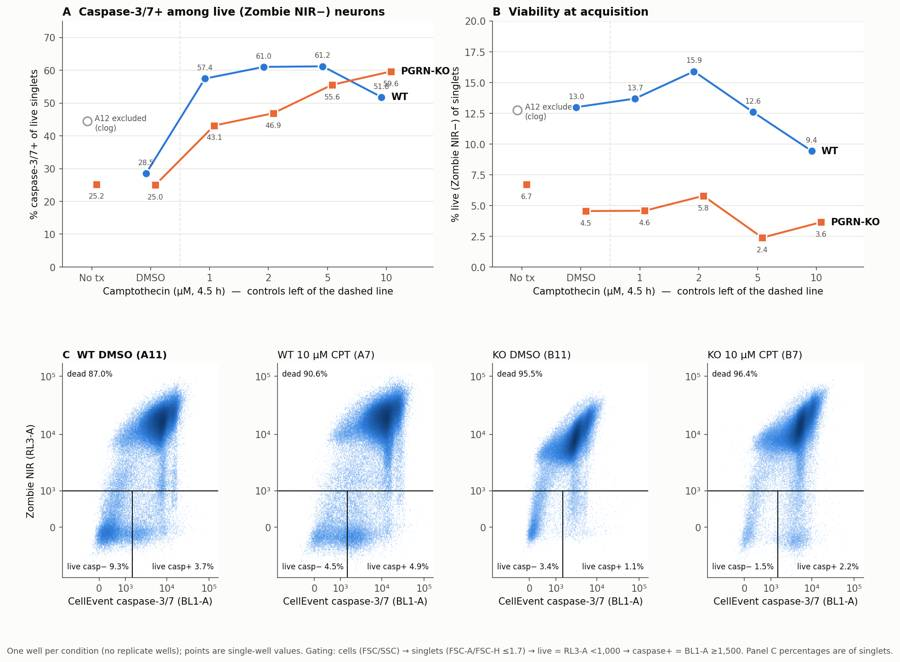
160
agent
Fixing two label collisions: the 10 µM labels in panel A and the A12 note in panel B.
161
tool call · Bash
cd /task; python3 - <<'EOF'
s=open('/task/work/figure.py').read()
s=s.replace("ax.annotate('A12 excluded\\n(clog)',(i+off,v),xytext=(8,-2),textcoords='offset points',fontsize=8,color=INK2,va='center')",
"ax.annotate('A12 excluded\\n(clog)',(i+off,v),xytext=(0,-12),textcoords='offset points',fontsize=8,color=INK2,va='top',ha='center')")
old=s[s.index("for ax,ser in [(axA,casp),(axB,viab)]:"):s.index("# density panels")]
new='''for ax,ser in [(axA,casp),(axB,viab)]:
for i,k in enumerate(xlab):
a,b=WT[k],KO[k]
for w,off,other in [(a,-0.08,b),(b,0.08,a)]:
if w=='A12': continue
hi = ser[w]>=ser[other] or other=='A12'
ax.annotate(f'{ser[w]:.1f}',(i+off,ser[w]),xytext=(0,9 if hi else -15),textcoords='offset points',ha='center',fontsize=7.5,color=INK2)
ax.set_xlim(-0.5,len(xlab)-0.05)
'''
s=s.replace(old,new)
open('/task/work/figure.py','w').write(s)
EOF
python3 work/figure.py162
tool call · Read
{
"file_path": "/task/outputs/figure.png"
}163
tool output
(Bash completed with no output)
164
tool output
166
tool call · Bash
cd /task; sed -i "s/xytext=(0,-12),textcoords='offset points',fontsize=8,color=INK2,va='top',ha='center')/xytext=(-6,-12),textcoords='offset points',fontsize=8,color=INK2,va='top',ha='left')/" work/figure.py && python3 work/figure.py
cat > /task/work/gateplot.py <<'EOF'
import sys; sys.path.insert(0,'/task/work')
from load import *
from build_gates import CELLS,SING
import matplotlib; matplotlib.use('Agg'); import matplotlib.pyplot as plt
from matplotlib.colors import LogNorm
d=load_all(); g=fk.parse_gating_xml('/task/outputs/gates.xml')
fig,axs=plt.subplots(2,6,figsize=(30,10))
for j,w in enumerate(['A6','A11','A10','B6','B11','B7']):
s,df=d[w]; r=g.gate_sample(s); c=r.get_gate_membership('cells')
ax=axs[0,j]; ax.hist2d(df['FSC-A'],df['SSC-A'],bins=250,range=[[0,1.05e6],[0,1.05e6]],norm=LogNorm(),cmap='Blues')
P=np.array(CELLS+[CELLS[0]]); ax.plot(P[:,0],P[:,1],'k-'); ax.set_title(f'{w} cells {c.mean()*100:.1f}%')
ax=axs[1,j]; ax.hist2d(df['FSC-A'][c],df['FSC-H'][c],bins=250,range=[[0,1.05e6],[0,6e5]],norm=LogNorm(),cmap='Blues')
P=np.array(SING+[SING[0]]); ax.plot(P[:,0],P[:,1],'k-'); ax.set_ylim(0,6e5); ax.set_title(f'{w} singlets {r.get_gate_membership("singlets")[c].mean()*100:.1f}% of cells')
plt.tight_layout(); plt.savefig('/task/work/gates_overlay.png',dpi=40)
EOF
python3 work/gateplot.py167
tool call · Read
{
"file_path": "/task/work/gates_overlay.png"
}168
tool output
(Bash completed with no output)
169
tool output
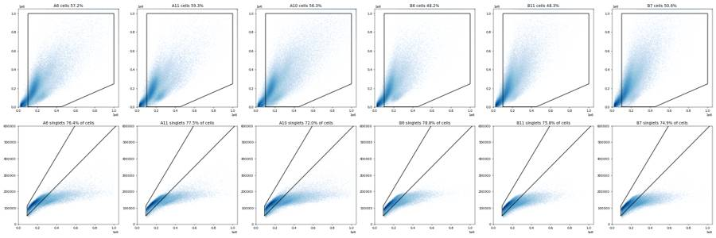
171
agent
Gate overlays look right. Collecting the last few numbers for the report: dead-cell CellEvent intensity, small CellEvent-bright events, and spillover checks.
172
tool call · Bash
cd /task; cat > /task/work/extra.py <<'EOF'
import sys; sys.path.insert(0,'/task/work')
from load import *
d=load_all(); g=fk.parse_gating_xml('/task/outputs/gates.xml')
for w,(s,df) in d.items():
r=g.gate_sample(s); sg=r.get_gate_membership('singlets'); dead=r.get_gate_membership('dead'); lcp=r.get_gate_membership('live_casp_pos')
rat=df['FSC-A']/df['FSC-H']
small=(df['FSC-A']>=5e4)&(df['FSC-A']<1e5)&(rat<1.7)&(df['RL3-A']<1000)&(df['BL1-A']>=1500)
print(w, 'deadBL1med %.0f'%(np.median(df['BL1-A'][dead]) if dead.sum() else np.nan), 'liveCaspPosBL1med %.0f'%(np.median(df['BL1-A'][lcp]) if lcp.sum() else np.nan),
'small Zneg BL1+ events %d (= %.2f x live_casp_pos)'%(small.sum(), small.sum()/max(lcp.sum(),1)))
EOF
python3 work/extra.py
python3 -c "
import pandas as pd
c=pd.read_csv('/task/outputs/counts.csv'); print(c.head(10).to_string()); print(c.groupby('role').population.unique())
print(c.shape, c.population.nunique())"173
tool output
A2 deadBL1med 571 liveCaspPosBL1med 1722 small Zneg BL1+ events 5 (= 0.01 x live_casp_pos)
A4 deadBL1med 6184 liveCaspPosBL1med 6822 small Zneg BL1+ events 43955 (= 0.26 x live_casp_pos)
A6 deadBL1med 217 liveCaspPosBL1med 2588 small Zneg BL1+ events 9 (= 0.25 x live_casp_pos)
A7 deadBL1med 11779 liveCaspPosBL1med 3202 small Zneg BL1+ events 6944 (= 0.77 x live_casp_pos)
A8 deadBL1med 15413 liveCaspPosBL1med 3168 small Zneg BL1+ events 11052 (= 0.78 x live_casp_pos)
A9 deadBL1med 12481 liveCaspPosBL1med 3153 small Zneg BL1+ events 9904 (= 0.53 x live_casp_pos)
A10 deadBL1med 12728 liveCaspPosBL1med 3496 small Zneg BL1+ events 25864 (= 1.47 x live_casp_pos)
A11 deadBL1med 7153 liveCaspPosBL1med 3770 small Zneg BL1+ events 6023 (= 0.94 x live_casp_pos)
A12 deadBL1med 6469 liveCaspPosBL1med 4165 small Zneg BL1+ events 12217 (= 1.17 x live_casp_pos)
B2 deadBL1med 1288 liveCaspPosBL1med 1762 small Zneg BL1+ events 5 (= 0.00 x live_casp_pos)
B4 deadBL1med 3477 liveCaspPosBL1med 3255 small Zneg BL1+ events 31184 (= 0.13 x live_casp_pos)
B6 deadBL1med 176 liveCaspPosBL1med 2320 small Zneg BL1+ events 0 (= 0.00 x live_casp_pos)
B7 deadBL1med 5198 liveCaspPosBL1med 4248 small Zneg BL1+ events 3004 (= 0.60 x live_casp_pos)
B8 deadBL1med 4955 liveCaspPosBL1med 4075 small Zneg BL1+ events 1892 (= 0.70 x live_casp_pos)
B9 deadBL1med 5139 liveCaspPosBL1med 4181 small Zneg BL1+ events 2811 (= 0.64 x live_casp_pos)
B10 deadBL1med 6176 liveCaspPosBL1med 4302 small Zneg BL1+ events 4098 (= 0.99 x live_casp_pos)
B11 deadBL1med 3019 liveCaspPosBL1med 3059 small Zneg BL1+ events 3016 (= 1.29 x live_casp_pos)
B12 deadBL1med 3317 liveCaspPosBL1med 3278 small Zneg BL1+ events 4619 (= 1.33 x live_casp_pos)
file well population role parent count pct_of_parent
0 Caspase_WT_KO_optimization_caspase_Group_A2.fcs A2 all_events other none 365736 NaN
1 Caspase_WT_KO_optimization_caspase_Group_A2.fcs A2 cells cells all_events 210549 57.5686
2 Caspase_WT_KO_optimization_caspase_Group_A2.fcs A2 singlets singlets cells 154256 73.2637
3 Caspase_WT_KO_optimization_caspase_Group_A2.fcs A2 live live singlets 154255 99.9994
4 Caspase_WT_KO_optimization_caspase_Group_A2.fcs A2 live_casp_pos marker_positive live 343 0.2224
5 Caspase_WT_KO_optimization_caspase_Group_A2.fcs A2 live_casp_neg other live 153912 99.7776
6 Caspase_WT_KO_optimization_caspase_Group_A2.fcs A2 dead other singlets 1 0.0006
7 Caspase_WT_KO_optimization_caspase_Group_A2.fcs A2 dead_casp_pos other dead 0 0.0000
8 Caspase_WT_KO_optimization_caspase_Group_A2.fcs A2 dead_casp_neg other dead 1 100.0000
9 Caspase_WT_KO_optimization_caspase_Group_A4.fcs A4 all_events other none 440820 NaN
role
cells [cells]
live [live]
marker_positive [live_casp_pos]
other [all_events, live_casp_neg, dead, dead_casp_po...
singlets [singlets]
Name: population, dtype: object
(162, 7) 9175
agent
Sizeable numbers of small CellEvent-bright, Zombie-negative fragments sit below the FSC cut. Checking how the main comparison changes with the FSC lower bound.
176
tool call · Bash
cd /task; cat > /task/work/sens2.py <<'EOF'
import sys; sys.path.insert(0,'/task/work')
from load import *
from matplotlib.path import Path
from build_gates import CELLS,SING
d=load_all()
for lo in [7e4,1e5,1.3e5]:
C=[(lo,5e3)]+CELLS[1:4]+[(lo,1e6)]
out=[]
for w in ['A11','A7','A10','B11','B12','B7','B10']:
s,df=d[w]
c=Path(C).contains_points(df[['FSC-A','SSC-A']].values)&Path(SING).contains_points(df[['FSC-A','FSC-H']].values)
lv=c&(df['RL3-A'].values<1000); cp=lv&(df['BL1-A'].values>=1500)
out.append(f'{w} casp {100*cp.sum()/lv.sum():.1f} live {100*lv.sum()/c.sum():.1f}')
print(int(lo),' | '.join(out))
EOF
python3 work/sens2.py177
tool output
70000 A11 casp 29.7 live 12.9 | A7 casp 51.7 live 9.4 | A10 casp 57.9 live 14.2 | B11 casp 27.9 live 4.5 | B12 casp 28.0 live 6.7 | B7 casp 59.7 live 3.6 | B10 casp 44.5 live 4.6 100000 A11 casp 28.5 live 13.0 | A7 casp 51.8 live 9.4 | A10 casp 57.4 live 13.7 | B11 casp 25.0 live 4.5 | B12 casp 25.2 live 6.7 | B7 casp 59.6 live 3.6 | B10 casp 43.1 live 4.6 130000 A11 casp 25.0 live 14.6 | A7 casp 51.0 live 10.4 | A10 casp 57.1 live 13.9 | B11 casp 14.7 live 5.7 | B12 casp 16.0 live 8.1 | B7 casp 56.7 live 4.5 | B10 casp 38.4 live 5.5
179
thinking
The camptothecin effect holds at every FSC cut, and the KO-vs-WT gap shifts with the cut but KO never sits above WT. I'm writing the report and answer.json now.
180
tool call · Write
{
"file_path": "/task/outputs/report.md",
"content": "# EXP23000279 \u2013 CellEvent caspase-3/7 + Zombie NIR flow assay, WT vs PGRN-KO iPSC neurons (plate acquired 09-Mar-2023)\n\n## Question\nFrom the plan: *is there a difference in caspase activity in PGRN-KO neurons compared with WT PGP1 neurons?* Camptothecin (1\u201310 \u00b5M, 4.5 h) was added as an apoptosis inducer. The run is the first optimisation round of the assay, before any AAV-PGRN rescue work.\n\n## Methods\n- **Data.** 18 Attune NxT FCS 3.1 files: one well per condition per genotype. Each file holds 365k\u2013612k events from about 47 s of acquisition, at the same voltages and FSC-H threshold of 25,000. The plate map lists duplicate control wells (columns 1/3/5), but only one of each control was acquired (columns 2/4/6).\n- **Software.** FlowKit 1.2.3. There is one GatingStrategy for all wells (`gates.xml`). Counts in `counts.csv` come from `gate_sample()` run on the re-loaded `gates.xml`, with no per-well changes. I checked them against an independent numpy calculation and they agree to within 1 event.\n- **Compensation.** None (`uncompensated`). The file spillover matrix is the identity. The single-stain controls show negligible crossover:\n - caspase-only wells: 100% of singlets stay below the Zombie NIR (RL3-A) live cut-off.\n - L/D-only wells: only 0.22% (WT) and 0.77% (KO) of Zombie-bright dead cells pass the CellEvent (BL1-A) cut-off.\n- **Gating hierarchy.** All gates are on raw linear channel values.\n 1. `cells`: FSC-A/SSC-A polygon. FSC-A from 100k to 1.0M, SSC-A from 5k to 1.0M, with the low-SSC/high-FSC corner removed. This drops sub-cellular debris and apoptotic fragments below the live-neuron FSC range (Zombie-negative FSC histograms have a valley at about 90\u2013125k) and drops saturated events.\n 2. `singlets`: FSC-A vs FSC-H polygon, keeping FSC-A/FSC-H between 0.8 and 1.7. Singlets peak at about 1.2\u20131.3; wide events and doublets sit above.\n 3. `live`: RL3-A (Zombie NIR) < 1,000, and its complement `dead` \u2265 1,000. Stained wells have a Zombie-negative peak at about 0 and a dead peak at about 13,000; unstained 99.9th percentile is ~200.\n 4. `live_casp_pos`: BL1-A (CellEvent) \u2265 1,500, and its complement `live_casp_neg`. In L/D-only wells (Zombie-stained, no CellEvent), only 0.17% (A6) and 0.05% (B6) of live cells pass this cut. `dead_casp_pos` and `dead_casp_neg` split the dead gate the same way.\n- **Metrics.**\n - Primary: **% caspase-3/7+ of live singlets** = `live_casp_pos / live \u00d7 100`.\n - Secondary: **% viable** = `live / singlets \u00d7 100`, and total caspase+ = `(live_casp_pos + dead_casp_pos) / singlets`.\n - Fold over the same-genotype DMSO well is also reported.\n - There is one well per condition, so SDs exist only where technical wells are pooled.\n- **QC.** For every well I checked event rate over time (0.25-s and 1-s bins), signal drift across five time segments, saturation, and the fraction of sub-threshold or negative events. I also varied the thresholds: live cut-off 700\u20132,000, caspase cut-off 1,000\u20133,000, and FSC lower bound 70k\u2013130k.\n\n## Results\n**QC.** A12 (WT no treatment) is **excluded** for a clog or fluidics interruption:\n- Only 2,824 events (0.7%) arrived in the first 20 s, followed by a burst. Event-rate CV was 0.94, against \u22640.12 in every other well.\n- The readout drifts inside the file: % caspase+ of live goes from 38.3% to 48.7% and % live from 15.5% to 11.1%. Stable wells drift \u22643 points.\n\nA8 and B8 each have a brief burst at about 3\u20134 s that changes nothing (\u22640.2 points); they are kept with a note. All other wells are stable. Every control behaves as labelled, so there is no sign of a mislabel.\n\n**Viability is very low in every Zombie-stained well, including untreated and vehicle wells** (panel B).\n\n| Well(s) | % live of singlets | % caspase+ of live | Live events |\n|---|---|---|---|\n| WT L/D-only (A6) / DMSO (A11) | 12.0 / 13.0 | \u2013 / 28.5 | 21,600 / 22,532 |\n| KO L/D-only (B6) / DMSO (B11) / no tx (B12) | 6.5 / 4.5 / 6.7 | \u2013 / 25.0 / 25.2 | 11,337 / 9,338 / 13,712 |\n| WT CPT 1 / 2 / 5 / 10 \u00b5M (A10, A9, A8, A7) | 13.7 / 15.9 / 12.6 / 9.4 | 57.4 / 61.0 / 61.2 / 51.8 | 17,470\u201330,647 |\n| KO CPT 1 / 2 / 5 / 10 \u00b5M (B10, B9, B8, B7) | 4.6 / 5.8 / 2.4 / 3.6 | 43.1 / 46.9 / 55.6 / 59.6 | 4,878\u20139,619 |\n\n1. **Genotype at baseline (primary metric).**\n - Caspase-3/7+ among live neurons is similar: KO DMSO 25.0% vs WT DMSO 28.5%, which is \u22123.5 points or 0.88\u00d7. KO DMSO and KO no-treatment together give 25.1 \u00b1 0.1%.\n - Across BL1 cut-offs of 1,000\u20133,000 the KO\u2013WT difference ranges from \u22120.9 to \u22128.4 points. Across FSC lower bounds of 70k\u2013130k it ranges from \u22121.8 to \u221210.3 points.\n - In no setting is KO higher than WT. **There is no evidence of higher caspase activity in PGRN-KO neurons.**\n2. **Camptothecin (positive control) works in both genotypes.**\n - WT: caspase+ of live rises to 51.8\u201361.2% at every dose, 1.8\u20132.1\u00d7 DMSO. It is already at plateau at 1 \u00b5M and dips at 10 \u00b5M, where viability also falls (9.4% vs 13.0%). This is consistent with the most apoptotic cells becoming Zombie-positive and leaving the live gate.\n - KO: the response is monotonic with dose, 43.1 \u2192 46.9 \u2192 55.6 \u2192 59.6% (1.7\u20132.4\u00d7 DMSO).\n - Pooled over doses: WT 57.9 \u00b1 4.4% vs KO 51.3 \u00b1 7.6%. There is no consistent genotype difference in sensitivity: KO is lower at 1\u20132 \u00b5M and slightly higher at 10 \u00b5M.\n3. **The clearest genotype difference is viability, not caspase.**\n - Untreated/DMSO wells: KO 5.9 \u00b1 1.2% live (B6, B11, B12) vs WT 12.5 \u00b1 0.7% (A6, A11), about 0.47\u00d7.\n - KO is lower than WT in every matched pair of wells, including all camptothecin doses.\n - Live caspase-negative (\"healthy\") cells are 3.4% of KO DMSO singlets vs 9.3% of WT D
… [4,608 more characters not shown]181
tool output
File created successfully at: /task/outputs/report.md (file state is current in your context — no need to Read it back)
183
agent
Correcting two ranges in the report after rechecking against counts.csv: dead fraction across all stained wells is 84–98%, and the CellEvent+ share of dead cells is 92–99%.
184
tool call · Bash
cd /task/outputs; python3 - <<'EOF'
p='/task/outputs/report.md'; s=open(p).read()
s=s.replace("**87–97.6% of singlets are Zombie NIR-positive in every stained well**, including untreated L/D-only and DMSO wells.","**84–98% of singlets are Zombie NIR-positive in every stained well.** That includes 87–96% in the untreated L/D-only and DMSO wells.")
s=s.replace("92–98% of dead cells are CellEvent-positive","92–99% of dead cells are CellEvent-positive")
open(p,'w').write(s)
EOF
grep -n "84–98\|92–99" report.md185
tool output
53: - 92–99% of dead cells are CellEvent-positive, so total caspase+ is 87.5% (WT DMSO), 93.8% (WT 10 µM), 88.8% (KO DMSO) and 94.2% (KO 10 µM). 68:- **84–98% of singlets are Zombie NIR-positive in every stained well.** That includes 87–96% in the untreated L/D-only and DMSO wells. Live-cell metrics therefore rest on a small surviving subset: 4,878–30,647 live events per well, and fewest in KO.
187
tool call · Bash
cd /task; cat > /task/work/answer.py <<'EOF'
import json, pandas as pd
cs=pd.read_csv('/task/outputs/condition_summary.csv'); conds=set(cs.condition)
fl=pd.read_csv('/task/outputs/flags.csv')
A={
"question":"Is there a difference in caspase (caspase-3/7) activity in PGRN-KO iPSC-derived neurons compared with WT PGP1 neurons, with camptothecin as an apoptosis inducer?",
"comparisons":[
{"comparison":"Genotype at baseline (DMSO vehicle): % caspase-3/7+ of live singlets, KO vs WT","a":"WT_DMSO_pctCaspPos_live","b":"KO_DMSO_pctCaspPos_live","direction":"no_clear_change","magnitude":"25.0% vs 28.5% (-3.5 points, 0.88x); KO no-treatment 25.2%; KO never above WT across BL1 cut-offs 1,000-3,000 (difference -0.9 to -8.4 points); n=1 well each","confidence":"low"},
{"comparison":"Genotype at baseline, KO vehicle+untreated wells pooled vs WT DMSO: % caspase-3/7+ of live","a":"WT_DMSO_pctCaspPos_live","b":"KO_DMSOorNoTreatment_pctCaspPos_live","direction":"no_clear_change","magnitude":"25.1 +/- 0.1% (n=2) vs 28.5% (n=1), -3.4 points","confidence":"low"},
{"comparison":"WT camptothecin 10 uM vs WT DMSO: % caspase-3/7+ of live","a":"WT_DMSO_pctCaspPos_live","b":"WT_CPT10uM_pctCaspPos_live","direction":"increase","magnitude":"51.8% vs 28.5% (+23.3 points, 1.82x); all four doses 51.8-61.2% (1.8-2.1x)","confidence":"medium"},
{"comparison":"KO camptothecin 10 uM vs KO DMSO: % caspase-3/7+ of live","a":"KO_DMSO_pctCaspPos_live","b":"KO_CPT10uM_pctCaspPos_live","direction":"increase","magnitude":"59.6% vs 25.0% (+34.6 points, 2.38x); dose-dependent 43.1/46.9/55.6/59.6% at 1/2/5/10 uM","confidence":"medium"},
{"comparison":"Genotype under camptothecin (all doses pooled): % caspase-3/7+ of live, KO vs WT","a":"WT_CPTallDoses_pctCaspPos_live","b":"KO_CPTallDoses_pctCaspPos_live","direction":"no_clear_change","magnitude":"51.3 +/- 7.6% vs 57.9 +/- 4.4% (n=4 dose wells each, -6.6 points); KO lower at 1-2 uM, higher at 10 uM","confidence":"low"},
{"comparison":"Genotype viability, untreated/vehicle wells: % live (Zombie NIR-) of singlets, KO vs WT","a":"WT_untreatedOrDMSO_pctLive","b":"KO_untreatedOrDMSO_pctLive","direction":"decrease","magnitude":"5.9 +/- 1.2% (n=3) vs 12.5 +/- 0.7% (n=2), 0.47x; KO lower in all 6 matched well pairs","confidence":"medium"}
],
"overall_answer":"no: there is no clear genotype difference in caspase-3/7 activity. 25.0% of live PGRN-KO neurons are caspase+ vs 28.5% of live WT neurons under DMSO, and total caspase+ is ~88% in both. Camptothecin roughly doubles caspase+ live cells in both genotypes, so the stain and the inducer work. KO wells had about half the viable cells (5.9% vs 12.5%), but with 87-96% dead cells in vehicle wells and n=1 well per condition this run cannot attribute that to PGRN loss.",
"assay_verdict":"needs_optimisation",
"next_action":"optimise_reagent_or_setting",
"next_change":{"what":"Neuron harvest/dissociation before Zombie NIR + CellEvent staining (plus replicate wells)",
"from":"150 uL Accutase 5-10 min, 75 uL FBS quench, 200xg spin, stain in PBS/flow buffer; 1 well per condition; result 87-96% Zombie NIR+ even in DMSO/untreated wells",
"to":"Neuron-gentle dissociation (papain + DNase I, ROCK inhibitor in all buffers, minimal trituration, cells kept on ice except the 30-min CellEvent step, 35-um strainer before acquisition), validated on untreated WT/KO wells to >=70% Zombie NIR- before rerunning the camptothecin series with >=3 wells per genotype x condition",
"why":"Only 5-13% of singlets were viable in vehicle wells, and 92-99% of dead cells are CellEvent+, so total caspase+ saturates at ~88-94%. The informative live-gated readout rests on 4.9k-31k survivors from single wells. Improving viability is needed before a PGRN-KO effect, or an AAV-PGRN rescue, can be detected."},
"excluded_wells":sorted(fl.loc[fl.decision=='exclude','well'].tolist()),
"caveats":[
"One well per condition from a single differentiation/plate; no inferential statistics. Pooled SDs come from technical wells of different control types.",
"84-98% of singlets are Zombie NIR+ in every stained well (87-96% in untreated/DMSO). Live-cell metrics rest on 4,878-30,647 live events per well; it is unknown whether death occurred in culture or during harvest.",
"The live gate captures only survivors: cells progressing to Zombie+ leave it, which blunts the WT dose-response (10 uM < 5 uM) and could hide a genotype effect expressed as death.",
"KO-vs-WT baseline difference depends on gate placement (-0.9 to -10.3 points over BL1 cut-off 1,000-3,000 and FSC lower bound 70k-130k), but KO is never higher than WT.",
"A12 (WT no treatment) excluded for a clog (0.7% of events in the first 20 s, within-file drift 38%->49% caspase+), so the WT baseline is the single DMSO well A11.",
"CellEvent brightness of dead cells is ~2x lower in KO than WT (median BL1 3,019 vs 7,153 in DMSO wells); compare % positive, not intensity, across genotypes.",
"Small (FSC-A 50-100k) Zombie-negative CellEvent-bright events (likely apoptotic bodies) are excluded by the cells gate; including them would raise all caspase+ values.",
"No compensation applied (file spillover = identity; single-stain controls show <=0.8% crossover). Duplicate control wells in the plate map were not acquired."]
}
for c in A['comparisons']:
assert c['a'] in conds and c['b'] in conds, c
json.dump(A,open('/task/outputs/answer.json','w'),indent=2,ensure_ascii=False)
print(A['excluded_wells'])
EOF
python3 work/answer.py188
tool output
['A12']
190
agent
Final check: reload gates.xml, re-gate every file and compare against counts.csv, then validate every deliverable against the spec.
191
tool call · Bash
cd /task; python3 - <<'EOF'
import flowkit as fk, pandas as pd, json, numpy as np
g=fk.parse_gating_xml('/task/outputs/gates.xml')
c=pd.read_csv('/task/outputs/counts.csv'); lay=pd.read_csv('/task/inputs/plate_layout.csv')
assert list(c.columns)==['file','well','population','role','parent','count','pct_of_parent']
bad=0
for _,r in lay.iterrows():
s=fk.Sample('/task/inputs/raw/'+r.file); rep=g.gate_sample(s).report
for _,row in c[c.file==r.file].iterrows():
if row.population=='all_events': assert row['count']==s.event_count; continue
v=int(rep.loc[rep.gate_name==row.population,'count'].iloc[0]); bad+= v!=row['count']
print('mismatches',bad, 'rows',len(c), 'pops per file', c.groupby('file').size().unique())
print('gate ids', g.get_gate_ids())
for role in ['cells','singlets','live','marker_positive']: print(role, c[c.role==role].population.unique())
cs=pd.read_csv('/task/outputs/condition_summary.csv'); print(list(cs.columns)); print('n=1 with sd:', ((cs.n_wells_used==1)&cs.sd.notna()).sum(), 'unique cond', cs.condition.is_unique, len(cs))
fl=pd.read_csv('/task/outputs/flags.csv'); print(list(fl.columns), len(fl))
a=json.load(open('/task/outputs/answer.json')); print(a['next_action'],a['assay_verdict'],a['excluded_wells'],a['overall_answer'][:3])
import re; print(re.findall(r'^## .*',open('/task/outputs/report.md').read(),re.M))
EOF
ls -la /task/outputs192
tool output
mismatches 0 rows 162 pops per file [9]
gate ids [('cells', ('root',)), ('singlets', ('root', 'cells')), ('live', ('root', 'cells', 'singlets')), ('live_casp_pos', ('root', 'cells', 'singlets', 'live')), ('live_casp_neg', ('root', 'cells', 'singlets', 'live')), ('dead', ('root', 'cells', 'singlets')), ('dead_casp_pos', ('root', 'cells', 'singlets', 'dead')), ('dead_casp_neg', ('root', 'cells', 'singlets', 'dead'))]
cells ['cells']
singlets ['singlets']
live ['live']
marker_positive ['live_casp_pos']
['condition', 'wells', 'n_wells_used', 'mean', 'sd', 'metric_definition', 'normalisation_applied']
n=1 with sd: 0 unique cond True 41
['file', 'well', 'issue_type', 'evidence', 'decision'] 18
optimise_reagent_or_setting needs_optimisation ['A12'] no:
['## Question', '## Methods', '## Results', '## Conclusion', '## Caveats', '## Recommendation']
total 372
drwxr-xr-x 2 root root 4096 Nov 10 17:21 .
drwxr-xr-x 5 root root 4096 Nov 10 17:08 ..
-rw-r--r-- 1 root root 5443 Nov 10 17:21 answer.json
-rw-r--r-- 1 root root 5721 Nov 10 17:18 condition_summary.csv
-rw-r--r-- 1 root root 14429 Nov 10 17:16 counts.csv
-rw-r--r-- 1 root root 316893 Nov 10 17:19 figure.png
-rw-r--r-- 1 root root 2291 Nov 10 17:18 flags.csv
-rw-r--r-- 1 root root 3956 Nov 10 17:16 gates.xml
-rw-r--r-- 1 root root 10215 Nov 10 17:21 report.md194
agent
**Answer: no.** On this plate PGRN-KO neurons show no clear difference in caspase-3/7 activity from WT. The assay works, but it needs optimisation before it can test a PGRN phenotype or the AAV-PGRN rescue. All seven deliverables are in `/task/outputs/`. I reloaded `gates.xml`, re-gated all 18 files and got exactly the counts in `counts.csv` (0 mismatches).
**Gating:** cells on FSC/SSC (FSC-A ≥ 100k) → singlets (FSC-A/FSC-H ≤ 1.7) → live (Zombie NIR below 1,000) → caspase+ (CellEvent at or above 1,500). No compensation was needed: the file's spillover matrix is the identity, and the single-stain controls show at most 0.8% crossover between channels.
**What the data show** (one well per condition, so no statistics):
| | WT | PGRN-KO |
|---|---|---|
| % caspase+ of live cells, DMSO | 28.5% | 25.0% (25.2% untreated) |
| % caspase+ of live cells, camptothecin 1–10 µM | 51.8–61.2%, flat from 1 µM | 43.1 → 59.6%, rising with dose |
| % live, untreated or DMSO wells | 12.5% | 5.9% |
- **Baseline:** live KO neurons are not more caspase-positive than WT. KO never came out higher than WT at any caspase or size cut-off I tried.
- **Positive control:** camptothecin roughly doubles the caspase+ fraction of live cells in both genotypes, so the stain and the inducer work.
- **Viability:** the clearest genotype difference is in survival, not caspase. KO wells had about half as many live cells, and KO was lower in all six matched well pairs.
- **The main problem:** 87–96% of cells are already dead in the untreated and DMSO wells. Nearly all dead cells are caspase+, so without separating live from dead cells the caspase readout sits at about 88–94% in every well.
- **Excluded well:** A12 (WT no treatment) clogged. Only 0.7% of its events arrived in the first 20 s, and its caspase+ value drifted from 38% to 49% within the file. That leaves no untreated WT well; the WT baseline is the single DMSO well A11.
**Caveats:**
- The KO-vs-WT baseline gap depends on where the gates sit: from −0.9 to −10.3 points, but never KO above WT.
- Dead KO cells are about half as bright in the caspase stain as dead WT cells, so compare percentages, not intensities, across genotypes.
- The live gate keeps only survivors. Cells that progress to dead leave it, which is likely why WT drops at 10 µM.
**Recommendation:** fix the neuron harvest, then repeat with at least 3 wells per condition. Replace the 5–10 min Accutase harvest with a gentler dissociation (papain plus DNase I, ROCK inhibitor, minimal pipetting, cells kept cold). Test it on untreated wells until at least 70% of cells are alive. Filter samples through a 35-µm strainer before running to avoid clogs like A12's. If dissociation can't be fixed, switch to imaging the stain in the well.
Files are in `/task/outputs/`:
- gates.xml
- counts.csv
- flags.csv
- condition_summary.csv
- figure.png
- report.md
- answer.json
final result
**Answer: no.** On this plate PGRN-KO neurons show no clear difference in caspase-3/7 activity from WT. The assay works, but it needs optimisation before it can test a PGRN phenotype or the AAV-PGRN rescue. All seven deliverables are in `/task/outputs/`. I reloaded `gates.xml`, re-gated all 18 files and got exactly the counts in `counts.csv` (0 mismatches). **Gating:** cells on FSC/SSC (FSC-A ≥ 100k) → singlets (FSC-A/FSC-H ≤ 1.7) → live (Zombie NIR below 1,000) → caspase+ (CellEvent at or above 1,500). No compensation was needed: the file's spillover matrix is the identity, and the single-stain controls show at most 0.8% crossover between channels. **What the data show** (one well per condition, so no statistics): | | WT | PGRN-KO | |---|---|---| | % caspase+ of live cells, DMSO | 28.5% | 25.0% (25.2% untreated) | | % caspase+ of live cells, camptothecin 1–10 µM | 51.8–61.2%, flat from 1 µM | 43.1 → 59.6%, rising with dose | | % live, untreated or DMSO wells | 12.5% | 5.9% | - **Baseline:** live KO neurons are not more caspase-positive than WT. KO never came out higher than WT at any caspase or size cut-off I tried. - **Positive control:** camptothecin roughly doubles the caspase+ fraction of live cells in both genotypes, so the stain and the inducer work. - **Viability:** the clearest genotype difference is in survival, not caspase. KO wells had about half as many live cells, and KO was lower in all six matched well pairs. - **The main problem:** 87–96% of cells are already dead in the untreated and DMSO wells. Nearly all dead cells are caspase+, so without separating live from dead cells the caspase readout sits at about 88–94% in every well. - **Excluded well:** A12 (WT no treatment) clogged. Only 0.7% of its events arrived in the first 20 s, and its caspase+ value drifted from 38% to 49% within the file. That leaves no untreated WT well; the WT baseline is the single DMSO well A11. **Caveats:** - The KO-vs-WT baseline gap depends on where the gates sit: from −0.9 to −10.3 points, but never KO above WT. - Dead KO cells are about half as bright in the caspase stain as dead WT cells, so compare percentages, not intensities, across genotypes. - The live gate keeps only survivors. Cells that progress to dead leave it, which is likely why WT drops at 10 µM. **Recommendation:** fix the neuron harvest, then repeat with at least 3 wells per condition. Replace the 5–10 min Accutase harvest with a gentler dissociation (papain plus DNase I, ROCK inhibitor, minimal pipetting, cells kept cold). Test it on untreated wells until at least 70% of cells are alive. Filter samples through a 35-µm strainer before running to avoid clogs like A12's. If dissociation can't be fixed, switch to imaging the stain in the well. Files are in `/task/outputs/`: - gates.xml - counts.csv - flags.csv - condition_summary.csv - figure.png - report.md - answer.json